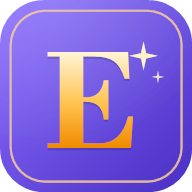

<!DOCTYPE html>
<html lang="ko">
<head>
<meta charset="utf-8">
<meta name="viewport" content="width=device-width, initial-scale=1, viewport-fit=cover">
<title>English</title>
<meta name="theme-color" content="#6B4EE6">
<meta name="mobile-web-app-capable" content="yes">
<meta name="apple-mobile-web-app-capable" content="yes">
<meta name="apple-mobile-web-app-title" content="English">
<link rel="manifest" href="./manifest.webmanifest">
<link rel="icon" type="image/png" sizes="32x32" href="./icons/favicon-32.png">
<link rel="icon" type="image/png" sizes="192x192" href="./icons/icon-192.png">
<link rel="apple-touch-icon" href="./icons/apple-touch-icon.png">
<style>
  :root{
    --indigo:#4F46E5; --indigo-d:#3730A3; --amber:#B45309;
    --ok:#15803D; --ok-bg:#DCFCE7; --no:#B91C1C; --no-bg:#FEE2E2;
    --ink:#0F172A; --muted:#475569; --cloud:#F4F5FD; --line:#D2D8EE;
    --surface:#FFFFFF; --chipbg:#E0E7FF; --chipink:#312E81;
    --shadow:0 1px 3px rgba(15,23,42,.07); --chippress:#C7D2FE; --toastbg:#0F172A;
  }
  @media (prefers-color-scheme: dark){
    :root{
      --indigo:#A5B4FC; --indigo-d:#C7D2FE; --amber:#FBBF24;
      --ok:#4ADE80; --ok-bg:#123021; --no:#F87171; --no-bg:#3A1618;
      --ink:#F1F5F9; --muted:#A3AEC2; --cloud:#0E1017; --line:#232838;
      --surface:#171B26; --chipbg:#2A3150; --chipink:#C7D2FE;
      --shadow:0 1px 3px rgba(0,0,0,.4); --chippress:#3B4570; --toastbg:#2C3346;
    }
  }
  *{box-sizing:border-box; -webkit-tap-highlight-color:transparent}
  body{margin:0; background:var(--cloud); color:var(--ink); font-size:17px; line-height:1.6;
    font-family:-apple-system,"Noto Sans KR","Segoe UI",Roboto,sans-serif;
    padding:env(safe-area-inset-top) 0 env(safe-area-inset-bottom);}
  #app{max-width:520px; margin:0 auto; padding:18px 18px 32px;}
  h1{font-size:34px; font-weight:900; color:var(--indigo); margin:8px 0 4px; letter-spacing:-.5px}
  .sub{color:var(--muted); font-size:15px; margin-bottom:20px}
  .card{background:var(--surface); border-radius:22px; padding:20px; border:1px solid var(--line); box-shadow:0 1px 3px rgba(17,24,39,.06)}
  .row{display:flex; align-items:center; justify-content:space-between}
  .stats{display:flex; justify-content:space-around; text-align:center}
  .stat b{display:block; font-size:24px; font-weight:900}
  .stat span{font-size:12px; color:var(--muted)}
  button{font-family:inherit; border:none; cursor:pointer}
  .primary{width:100%; min-height:60px; border-radius:20px; background:var(--indigo);
    color:var(--cloud); font-size:19px; font-weight:800; margin-top:18px}
  .primary:active{background:var(--indigo-d)}
  .ghost{width:100%; min-height:52px; border-radius:18px; background:transparent;
    border:2px solid var(--line); color:var(--ink); font-size:16px; font-weight:800; margin-top:10px}
  .link{background:none; color:var(--muted); font-size:14px; text-decoration:underline; padding:8px}
  .bar{height:10px; border-radius:6px; background:var(--line); overflow:hidden; margin-top:8px}
  .qhead{position:sticky; top:0; z-index:20; background:var(--cloud); margin:0 -18px;
    padding:10px 18px 12px}
  .qhead .sc{display:flex; gap:16px; align-items:baseline}
  .qhead .sc em{font-style:normal; font-size:12px; font-weight:700; color:var(--muted); margin-right:5px}
  .qhead .sc b{font-size:20px; font-weight:900}
  .bar > i{display:block; height:100%; background:var(--indigo); border-radius:5px; transition:width .3s}
  .meta{font-size:14px; color:var(--muted); font-weight:700}
  .ipa{display:inline-block; font-family:ui-monospace,Menlo,Consolas,monospace; font-size:15px;
    color:var(--ink); background:var(--line); border-radius:8px; padding:6px 11px; letter-spacing:.2px}
  .term{font-size:38px; font-weight:900; color:var(--indigo); line-height:1.15; word-break:break-word}
  .prompt{font-size:22px; font-weight:700; line-height:1.55}
  .speak{min-height:52px; padding:0 18px; border-radius:26px; background:var(--chipbg);
    color:var(--chipink); font-size:15px; font-weight:800; display:inline-flex;
    align-items:center; gap:8px; margin:6px 8px 0 0}
  .speak:active{background:var(--chippress)}
  .speak[disabled]{opacity:.4}
  .opt{width:100%; min-height:68px; text-align:left; background:var(--surface); border:2px solid var(--line);
    border-radius:18px; padding:17px 18px; font-size:18px; font-weight:700; color:var(--ink); margin-top:12px;
    display:flex; align-items:center; justify-content:space-between; gap:12px; transition:.15s}
  .opt:active{transform:scale(.985)}
  .opt.correct{background:var(--ok-bg); border-color:var(--ok); box-shadow:inset 5px 0 0 var(--ok)}
  .opt.wrong{background:var(--no-bg); border-color:var(--no); box-shadow:inset 5px 0 0 var(--no)}
  .opt.dim{opacity:.35}
  .mark{font-size:22px; font-weight:900}
  .fb{border-radius:20px; padding:18px; margin-top:18px}
  .fb.ok{background:var(--ok-bg)} .fb.no{background:var(--no-bg)}
  .fb h3{margin:0; font-size:21px; font-weight:900}
  .fb h3.ok{color:var(--ok)} .fb h3.no{color:var(--no)}
  .fb p{margin:10px 0 0; font-size:17px; line-height:1.7; color:var(--ink)}
  .fb .ko{color:var(--muted)}
  .notice{background:var(--line); border-radius:14px; padding:14px; font-size:14px;
    color:var(--muted); line-height:1.7; margin-top:16px}
  .wrongitem{background:var(--no-bg); border-radius:16px; padding:16px; margin-top:12px}
  .wrongitem b{font-size:20px; font-weight:900; color:var(--no)}
  .plus{color:var(--ok); font-weight:800; font-size:15px; margin-left:10px}
  .fire{color:var(--amber)}
  .install{width:100%; min-height:56px; border-radius:18px; background:var(--ok); color:var(--cloud);
    font-size:16px; font-weight:800; margin-top:10px}
  .tabs{display:flex; gap:8px; margin:14px 0 12px}
  .tab{flex:1; min-height:46px; border-radius:14px; background:var(--surface); border:1.5px solid var(--line);
    color:var(--muted); font-size:14px; font-weight:800}
  .tab.on{background:var(--indigo); border-color:var(--indigo); color:var(--cloud)}
  .search{width:100%; min-height:50px; border-radius:14px; border:1.5px solid var(--line);
    padding:0 16px; font-size:16px; font-family:inherit; background:var(--surface); color:var(--ink); margin-bottom:6px}
  .search:focus{outline:none; border-color:var(--indigo)}
  .item{background:var(--surface); border-radius:16px; padding:14px 16px; margin-top:10px}
  .item .top{display:flex; align-items:center; justify-content:space-between; gap:10px}
  .item b{font-size:18px; font-weight:800; color:var(--indigo)}
  .badge{font-size:11px; font-weight:800; border-radius:999px; padding:4px 9px; white-space:nowrap}
  .b-new{background:var(--line); color:var(--muted)}
  .b-go{background:var(--chipbg); color:var(--chipink)}
  .b-ok{background:var(--ok-bg); color:var(--ok)}
  .b-bad{background:var(--no-bg); color:var(--no)}
  .item .ko{font-size:15px; margin-top:6px}
  .item .ex{font-size:15px; color:var(--muted); margin-top:6px; line-height:1.6}
  .miniSpeak{min-height:40px; padding:0 12px; border-radius:20px; background:var(--chipbg);
    color:var(--chipink); font-size:13px; font-weight:800; margin-top:10px}
  .empty{text-align:center; color:var(--muted); font-size:15px; line-height:1.7; padding:40px 20px}
  .chips{display:flex; gap:8px; margin-top:10px; flex-wrap:wrap}
  .chip{flex:1 1 0; min-width:78px; min-height:52px; border-radius:14px; background:var(--surface);
    border:1.5px solid var(--line); color:var(--muted); font-size:14px; font-weight:700;
    display:flex; flex-direction:column; align-items:center; justify-content:center; gap:2px; padding:6px}
  .chip small{font-size:12px; font-weight:600; opacity:.85}
  .chip.on{background:var(--indigo); border-color:var(--indigo); color:var(--cloud)}
  .chip.on small{opacity:.9}
  .label{font-size:13px; font-weight:800; color:var(--muted); margin-top:18px}
  .topic{display:inline-block; background:var(--chipbg); color:var(--indigo-d); border-radius:8px;
    padding:4px 10px; font-size:12px; font-weight:800}
  .tip{background:var(--surface); border-radius:12px; padding:13px 15px; margin-top:12px;
    font-size:15px; line-height:1.7; color:var(--ink); border-left:5px solid var(--indigo)}
  .speak.busy{background:var(--indigo); color:var(--cloud)}
  #toast{position:fixed; left:12px; right:12px; bottom:16px; margin:0 auto; max-width:496px;
    background:var(--toastbg); color:#fff; border-radius:14px; padding:14px 16px; font-size:14px;
    line-height:1.5; opacity:0; transform:translateY(12px); pointer-events:none;
    transition:.22s; z-index:99; box-shadow:0 6px 24px rgba(0,0,0,.25)}
  #toast.show{opacity:1; transform:translateY(0)}
  .top{display:flex; align-items:center; justify-content:space-between; gap:10px; margin:6px 0 2px}
  .top h1{margin:0}
  .pill{display:inline-flex; align-items:center; gap:8px; min-height:48px; padding:0 16px; border-radius:24px;
    background:var(--surface); border:1.5px solid var(--line); color:var(--ink); font-size:16px; font-weight:800;
    box-shadow:var(--shadow)}
  .pill i{font-style:normal; color:var(--muted); font-size:12px}
  .hero{margin-top:16px}
  .hero .big{font-size:15px; color:var(--muted); font-weight:700}
  .hero .big b{font-size:30px; color:var(--ink); font-weight:900; margin-right:4px}
  .hero .stats{margin-top:16px; padding-top:14px; border-top:1px solid var(--line)}
  .segs{display:flex; gap:8px; margin-top:10px}
  .seg{flex:1; min-height:56px; border-radius:14px; background:var(--surface); border:1.5px solid var(--line);
    color:var(--muted); font-size:15px; font-weight:800; display:flex; flex-direction:column;
    align-items:center; justify-content:center; gap:1px; padding:6px}
  .seg small{font-size:11px; font-weight:600; opacity:.85}
  .seg.on{background:var(--indigo); border-color:var(--indigo); color:var(--cloud)}
  .ghost small{display:block; font-size:12px; font-weight:600; opacity:.85; margin-top:2px}
  .primary small{display:block; font-size:13px; font-weight:600; opacity:.9; margin-top:2px}
  .foot{display:flex; justify-content:center; gap:6px; flex-wrap:wrap; margin-top:18px}
  details.how{margin-top:16px; background:var(--line); border-radius:14px; padding:12px 14px;
    font-size:14px; color:var(--muted); line-height:1.7}
  details.how summary{font-weight:800; cursor:pointer; min-height:28px}
  .sheetbg{position:fixed; inset:0; background:rgba(15,23,42,.55); z-index:60; display:flex;
    align-items:flex-end; justify-content:center}
  .sheet{width:100%; max-width:520px; max-height:86vh; overflow:auto; background:var(--surface);
    border-radius:24px 24px 0 0; padding:18px 16px calc(18px + env(safe-area-inset-bottom));
    box-shadow:0 -8px 32px rgba(0,0,0,.25)}
  .sheet h2{margin:0; font-size:20px; font-weight:900}
  .trow{width:100%; text-align:left; display:flex; align-items:center; gap:14px; min-height:68px;
    border-radius:16px; background:var(--cloud); border:2px solid transparent; padding:10px 14px; margin-top:10px;
    color:var(--ink)}
  .trow .em{font-size:30px; width:40px; text-align:center}
  .trow .tx{flex:1; min-width:0}
  .trow .tx b{display:block; font-size:17px; font-weight:900}
  .trow .tx span{display:block; font-size:13px; color:var(--muted); line-height:1.4}
  .trow .ct{font-size:12px; color:var(--muted); font-weight:700; white-space:nowrap; text-align:right}
  .trow.on{border-color:var(--indigo); background:var(--chipbg)}
  .trow .ck{color:var(--indigo); font-weight:900}
  .stick{position:sticky; bottom:0; z-index:15; margin-top:6px;
    padding:14px 0 calc(8px + env(safe-area-inset-bottom)); background:linear-gradient(to top, var(--cloud) 68%, transparent)}
  .stick .primary{margin-top:0}
  .fb{scroll-margin-top:96px}
  .instr{font-size:13px; font-weight:700; color:var(--muted); margin-bottom:10px}
  .iconbtn{color:var(--ink); min-width:48px; min-height:48px; padding:0 12px; border-radius:24px; background:var(--surface);
    border:1.5px solid var(--line); font-size:20px; line-height:1; box-shadow:var(--shadow)}
  .nav{display:flex; align-items:center; gap:8px}
  .nav button{min-height:44px; min-width:44px; padding:0 14px; border-radius:22px; background:var(--surface);
    border:1.5px solid var(--line); color:var(--muted); font-size:14px; font-weight:800}
  .nav button:active{background:var(--chipbg)}
  .nav .sp{flex:1}
  @keyframes afill{from{width:0}to{width:100%}}
  @keyframes fin{from{opacity:0; transform:translateY(8px)}to{opacity:1; transform:none}}
  .abar{height:6px; border-radius:3px; background:var(--line); overflow:hidden; margin-top:10px}
  .abar i{display:block; height:100%; width:0; background:var(--indigo); border-radius:3px;
    animation:afill linear forwards}
  .abar.paused i{animation-play-state:paused}
  .autorow{display:flex; gap:8px; align-items:center; margin-top:10px; flex-wrap:wrap}
  .autorow button{min-height:40px; padding:0 14px; border-radius:20px; background:var(--chipbg);
    color:var(--chipink); font-size:13px; font-weight:800}
  .flashrow{display:flex; gap:8px; margin-top:10px}
  .flashbtn{flex:1; min-height:60px; border-radius:18px; background:var(--chipbg); color:var(--chipink);
    border:2px solid var(--indigo); font-size:17px; font-weight:900}
  .flashbtn small{display:block; font-size:12px; font-weight:600; opacity:.85; margin-top:1px}
  .flash{position:fixed; inset:0; z-index:40; background:var(--cloud); display:flex; flex-direction:column;
    height:100vh; height:100dvh; padding:calc(10px + env(safe-area-inset-top)) 16px calc(14px + env(safe-area-inset-bottom))}
  .flash .fhead{display:flex; align-items:center; gap:8px; max-width:560px; width:100%; margin:0 auto}
  .flash .fhead .sp{flex:1; text-align:center; font-size:14px; font-weight:800; color:var(--muted)}
  .flash .abar{max-width:560px; width:100%; margin:12px auto 0}
  .fcard{flex:1; display:flex; flex-direction:column; align-items:center; justify-content:center; text-align:center;
    gap:12px; padding:8px; overflow:hidden; animation:fin .18s ease-out; max-width:560px; width:100%; margin:0 auto}
  .fword{font-size:clamp(40px,13vw,80px); font-weight:900; color:var(--indigo); line-height:1.1; word-break:break-word}
  .fword.sm{font-size:clamp(24px,7vw,36px)}
  .fipa{font-family:ui-monospace,Menlo,Consolas,monospace; font-size:clamp(22px,6.6vw,36px); color:var(--ink);
    background:var(--line); border-radius:14px; padding:8px 20px; letter-spacing:.3px}
  .fko{font-size:clamp(30px,9vw,48px); font-weight:900; line-height:1.25}
  .fex{font-size:clamp(16px,4.4vw,22px); font-weight:600; line-height:1.6; margin-top:6px}
  .fexko{font-size:clamp(14px,4vw,18px); color:var(--muted); line-height:1.6}
  .fctl{display:flex; gap:10px; align-items:center; justify-content:center; max-width:560px; width:100%; margin:0 auto}
  .fctl button{min-width:58px; min-height:58px; border-radius:29px; background:var(--surface);
    border:1.5px solid var(--line); color:var(--ink); font-size:20px; font-weight:800}
  .fctl .big{min-width:92px; background:var(--indigo); border-color:var(--indigo); color:var(--cloud)}
  @media (min-width:600px){ #app{max-width:600px} }
  /* 테마: JS 가 data-mode(light/dark)와 data-hc(고대비)를 정한다. 자동이면 폰 설정을 따른다. */
  :root[data-mode="light"]{
    --indigo:#4F46E5; --indigo-d:#3730A3; --amber:#B45309;
    --ok:#15803D; --ok-bg:#DCFCE7; --no:#B91C1C; --no-bg:#FEE2E2;
    --ink:#0F172A; --muted:#475569; --cloud:#F4F5FD; --line:#D2D8EE;
    --surface:#FFFFFF; --chipbg:#E0E7FF; --chipink:#312E81;
    --shadow:0 1px 3px rgba(15,23,42,.07); --chippress:#C7D2FE; --toastbg:#0F172A;
  }
  :root[data-mode="dark"]{
    --indigo:#A5B4FC; --indigo-d:#C7D2FE; --amber:#FBBF24;
    --ok:#4ADE80; --ok-bg:#123021; --no:#F87171; --no-bg:#3A1618;
    --ink:#F1F5F9; --muted:#A3AEC2; --cloud:#0E1017; --line:#232838;
    --surface:#171B26; --chipbg:#2A3150; --chipink:#C7D2FE;
    --shadow:0 1px 3px rgba(0,0,0,.4); --chippress:#3B4570; --toastbg:#2C3346;
  }
  :root[data-mode="black"]{
    --indigo:#A5B4FC; --indigo-d:#C7D2FE; --amber:#FBBF24;
    --ok:#4ADE80; --ok-bg:#0A2414; --no:#F87171; --no-bg:#2C1012;
    --ink:#F1F5F9; --muted:#A3AEC2; --cloud:#000000; --line:#1E222C;
    --surface:#0B0D12; --chipbg:#1B2140; --chipink:#C7D2FE;
    --shadow:0 0 0 1px #1E222C; --chippress:#2B3566; --toastbg:#1C202B;
  }
  /* 고대비: 글자는 거의 검정/흰색, 배경과의 명암 차이를 최대로, 테두리를 진하게 */
  :root[data-hc="1"][data-mode="light"]{
    --indigo:#1E1B8E; --indigo-d:#0F0D5C; --amber:#7A3A00;
    --ok:#05652B; --ok-bg:#CDF3DA; --no:#8F0000; --no-bg:#FFDADA;
    --ink:#000000; --muted:#1B2433; --cloud:#FFFFFF; --line:#8A93A6;
    --surface:#FFFFFF; --chipbg:#D9E0FF; --chipink:#000000;
    --shadow:0 0 0 1.5px #000000; --chippress:#B4C0FF; --toastbg:#000000;
  }
  :root[data-hc="1"][data-mode="dark"], :root[data-hc="1"][data-mode="black"]{
    --indigo:#C7D2FE; --indigo-d:#FFFFFF; --amber:#FFD54A;
    --ok:#5CFF9A; --ok-bg:#00381B; --no:#FF8A8A; --no-bg:#4A0000;
    --ink:#FFFFFF; --muted:#E5E7EB; --cloud:#000000; --line:#8A93A6;
    --surface:#000000; --chipbg:#1E2A6B; --chipink:#FFFFFF;
    --shadow:0 0 0 1.5px #FFFFFF; --chippress:#34449A; --toastbg:#1B1B1B;
  }
  [data-hc="1"] .card, [data-hc="1"] .item, [data-hc="1"] .notice, [data-hc="1"] .tip{border:2px solid var(--ink)}
  [data-hc="1"] .chip, [data-hc="1"] .seg, [data-hc="1"] .opt, [data-hc="1"] .tab, [data-hc="1"] .pill,
  [data-hc="1"] .iconbtn, [data-hc="1"] .ghost, [data-hc="1"] .trow{border-width:2px}
  [data-hc="1"] .meta, [data-hc="1"] .sub, [data-hc="1"] .fexko, [data-hc="1"] .stat span{color:var(--ink)}
  [data-hc="1"] .fipa, [data-hc="1"] .ipa{border:2px solid var(--ink); background:var(--surface)}
  .fsbanner{display:flex; align-items:center; gap:6px; margin-top:12px}
  .fsgo{flex:1; min-height:46px; border-radius:14px; background:var(--chipbg); color:var(--chipink); font-size:15px; font-weight:800}
  .opt .optl{display:flex; align-items:center; gap:12px; min-width:0}
  .opt .num{display:inline-flex; align-items:center; justify-content:center; flex:none; width:30px; height:30px;
    border-radius:15px; background:var(--chipbg); color:var(--chipink); font-size:14px; font-weight:800}
  .opt.correct .num, .opt.wrong .num{background:transparent}
  .split{display:flex; margin-top:12px; border:2px solid var(--indigo); border-radius:18px; overflow:hidden; background:var(--surface)}
  .split .main{flex:1; min-height:62px; background:transparent; color:var(--ink); font-size:17px; font-weight:900;
    text-align:left; padding:0 18px}
  .split .main small{display:block; font-size:13px; font-weight:600; color:var(--muted); margin-top:1px}
  .split .gear{width:62px; border-left:2px solid var(--indigo); background:var(--chipbg); color:var(--chipink); font-size:22px}
  .tert{display:flex; gap:10px; margin-top:12px}
  .tert button{flex:1; min-height:54px; border-radius:16px; background:var(--surface); border:2px solid var(--line);
    color:var(--ink); font-size:16px; font-weight:800}
  .abar:empty{background:var(--line)}
  /* 깜빡이 */
  .flash .abar{height:8px}
  .fclose{min-height:46px; padding:0 16px; border-radius:23px; background:var(--surface); border:2px solid var(--line);
    color:var(--ink); font-size:15px; font-weight:800}
  .fcount{margin-left:auto; text-align:right; font-size:15px; color:var(--muted); font-weight:700; line-height:1.2}
  .fcount b{font-size:28px; font-weight:900; color:var(--ink)}
  .fcount small{display:block; font-size:12px; font-weight:700}
  .fword{font-size:clamp(44px,14vw,88px)}
  .fko{font-size:clamp(32px,10vw,52px)}
  .fex{font-size:clamp(17px,4.8vw,24px)}
  .fhint{text-align:center; font-size:13px; color:var(--muted); min-height:20px; margin:4px auto 8px; max-width:560px; width:100%}
  .fctl{margin-top:2px}
  .fctl .big{min-width:108px; min-height:66px; border-radius:33px}
  .fopts{display:flex; gap:8px; flex-wrap:wrap; max-width:560px; width:100%; margin:12px auto 0}
  .fopts button{flex:1 1 22%; min-height:48px; padding:0 8px; border-radius:24px; background:var(--surface);
    border:2px solid var(--line); color:var(--ink); font-size:14px; font-weight:800; white-space:nowrap}
  .fopts button.tgl{border-color:var(--indigo); box-shadow:0 0 0 2px var(--indigo)}
  /* 학습 노트 */
  .libbar{position:sticky; top:0; z-index:20; background:var(--cloud); margin:0 -18px; padding:10px 18px 8px}
  .libbar .tabs{margin:0 0 8px}
  .libbar .search{margin-bottom:0}
  .item{border:1px solid var(--line); padding:16px; margin-top:12px}
  .item b{font-size:20px}
  .badge{font-size:12px; padding:5px 11px}
  .miniSpeak{font-size:14px; min-height:44px; padding:0 14px}
  .weakcta{background:var(--surface); border:1px solid var(--line); border-radius:20px; padding:16px; margin-top:12px}
  .weakcta .primary{margin-top:10px}
  .empty .primary{margin-top:20px}
  #libStatus .chip{min-width:0; min-height:46px; padding:6px 2px; font-size:14px}
  .bar.two{position:relative}
  .bar.two > i{position:absolute; left:0; top:0}
  .bar.two > i.seen{background:var(--chippress)}
  .hero .big .mastered{font-size:14px; font-weight:800; color:var(--ok)}
  .sheet .chip{word-break:keep-all}
  .opts2{display:grid; grid-template-columns:1fr 1fr; gap:8px}
  .opts2 .chip{min-width:0; min-height:58px}
  .starbtn{min-width:44px; min-height:44px; padding:0 6px; border-radius:22px; background:transparent;
    color:var(--amber); font-size:26px; line-height:1}
  .starbtn:active{background:var(--chipbg)}
  .card{position:relative}
  .cardstar{position:absolute; top:8px; right:8px}
  .toprt{display:flex; align-items:center; gap:2px}
  .fstarwrap{margin-left:auto}
  .fstarwrap + .fcount{margin-left:12px}
  .fstar{font-size:30px}
  .iconbtn.tgl{border-color:var(--indigo); box-shadow:0 0 0 2px var(--indigo)}
  .diag{width:100%; min-height:52px; border-radius:18px; background:var(--chipbg); color:var(--indigo-d);
    font-size:15px; font-weight:800; margin-top:10px}
  /* ================= 프리미엄 디자인 레이어 =================
     보라(주 색) + 햇살 주황(강조) + 분홍(포인트) + 연보라 바탕. 다크·블랙에서는 밝은 라벤더가 주 색이 된다.
     정답 초록 / 오답 빨강은 바꾸지 않는다(피드백 신호). 아래 블록이 앞의 같은 선택자를 덮어쓴다. */
  :root{
    --indigo:#6B4EE6; --indigo-d:#5238C8; --amber:#B45309; --gold:#FF9F1C; --gold-l:#FFD27A; --pop:#FF6F91;
    --ok:#167A3E; --ok-bg:#E3F4E8; --no:#B42318; --no-bg:#FDE8E6;
    --ink:#1E1A33; --muted:#635E7D; --cloud:#F7F5FF; --line:#E1DAF5;
    --surface:#FFFFFF; --chipbg:#EEE9FF; --chipink:#4B34B8;
    --shadow:0 6px 22px rgba(107,78,230,.10); --chippress:#DDD4FF; --toastbg:#1E1A33;
    --serif:"Bodoni MT","Didot","Bodoni 72","Iowan Old Style","Palatino Linotype","Book Antiqua",Georgia,"Times New Roman",serif;
  }
  @media (prefers-color-scheme: dark){
    :root{
      --indigo:#B7A6FF; --indigo-d:#D3C8FF; --amber:#FFB84D; --gold:#FFB84D; --gold-l:#FFD58F; --pop:#FF86A5;
      --ok:#4ADE80; --ok-bg:#0F2A1C; --no:#F87171; --no-bg:#371416;
      --ink:#F4F1FF; --muted:#AEA8C6; --cloud:#12101C; --line:#2D2842;
      --surface:#1B1829; --chipbg:#2A2447; --chipink:#DDD3FF;
      --shadow:0 8px 26px rgba(0,0,0,.35); --chippress:#3A3266; --toastbg:#2B2640;
    }
  }
  :root[data-mode="light"]{
    --indigo:#6B4EE6; --indigo-d:#5238C8; --amber:#B45309; --gold:#FF9F1C; --gold-l:#FFD27A; --pop:#FF6F91;
    --ok:#167A3E; --ok-bg:#E3F4E8; --no:#B42318; --no-bg:#FDE8E6;
    --ink:#1E1A33; --muted:#635E7D; --cloud:#F7F5FF; --line:#E1DAF5;
    --surface:#FFFFFF; --chipbg:#EEE9FF; --chipink:#4B34B8;
    --shadow:0 6px 22px rgba(107,78,230,.10); --chippress:#DDD4FF; --toastbg:#1E1A33;
  }
  :root[data-mode="dark"]{
    --indigo:#B7A6FF; --indigo-d:#D3C8FF; --amber:#FFB84D; --gold:#FFB84D; --gold-l:#FFD58F; --pop:#FF86A5;
    --ok:#4ADE80; --ok-bg:#0F2A1C; --no:#F87171; --no-bg:#371416;
    --ink:#F4F1FF; --muted:#AEA8C6; --cloud:#12101C; --line:#2D2842;
    --surface:#1B1829; --chipbg:#2A2447; --chipink:#DDD3FF;
    --shadow:0 8px 26px rgba(0,0,0,.35); --chippress:#3A3266; --toastbg:#2B2640;
  }
  :root[data-mode="black"]{
    --indigo:#B7A6FF; --indigo-d:#D3C8FF; --amber:#FFB84D; --gold:#FFB84D; --gold-l:#FFD58F; --pop:#FF86A5;
    --ink:#F4F1FF; --muted:#AEA8C6; --chipbg:#1C1733; --chipink:#DDD3FF; --chippress:#2E2650; --line:#25203A;
  }
  :root[data-hc="1"][data-mode="light"]{
    --indigo:#2B1A8C; --indigo-d:#1A0F63; --gold:#9A5400; --gold-l:#D98A00; --cloud:#FFFFFF;
    --chipbg:#E6E0FF; --chipink:#000000; --line:#7A7396;
  }
  :root[data-hc="1"][data-mode="dark"], :root[data-hc="1"][data-mode="black"]{
    --indigo:#D9CFFF; --indigo-d:#FFFFFF; --gold:#FFC857; --gold-l:#FFE0A0; --chipink:#FFFFFF;
  }

  /* 글꼴: 영어 단어·숫자·로고는 세리프 */
  body{letter-spacing:-.01em}
  .brand{display:flex; align-items:center; gap:10px; min-width:0}
  .brand .logo{width:42px; height:42px; flex:none; border-radius:12px; box-shadow:0 4px 14px rgba(107,78,230,.30)}
  .brand h1, .top h1{font-family:var(--serif); font-weight:700; font-size:33px; color:var(--ink); letter-spacing:.3px; margin:0}
  .term, .fword, .item b, .hero .big b, .stat b, .fcount b{font-family:var(--serif); font-weight:700; letter-spacing:.2px}
  .term{color:var(--indigo)}
  .fword{color:var(--indigo)}

  /* 표면: 부드러운 그림자, 가는 테두리 */
  .card, .item, .weakcta{box-shadow:var(--shadow)}
  .card{border-radius:24px}
  .opt{border-width:1.5px; box-shadow:0 2px 8px rgba(27,42,74,.04)}
  .chip, .seg, .tab, .pill, .search{border-width:1px}
  .ghost, .tert button{border-width:1.5px}
  .hero .stats{border-top-color:var(--line)}

  /* 강조: 금색 */
  .bar > i, .abar i{background:linear-gradient(90deg, var(--gold), var(--gold-l))}
  .bar.two > i.seen{background:var(--chippress)}
  .split{border-color:var(--gold); border-width:1.5px}
  .split .gear{border-left:1.5px solid var(--gold); background:var(--surface); color:var(--gold)}
  .trow.on{border-color:var(--gold)}
  .tip{border-left-color:var(--gold)}
  .starbtn{color:var(--gold)}
  .opt .num{background:var(--chipbg); color:var(--chipink)}
  .primary{box-shadow:0 10px 24px rgba(107,78,230,.28); letter-spacing:-.01em}
  .primary small{opacity:.78; font-weight:600}
  .ipa, .fipa{background:var(--chipbg); color:var(--ink)}
  .label{letter-spacing:.06em}

  /* 선 아이콘 */
  .ic{width:20px; height:20px; flex:none; display:inline-block; vertical-align:-4px}
  .primary .ic, .ghost .ic, .split .main .ic{margin-right:6px}
  .nav button, .tert button, .fopts button, .fclose, .miniSpeak, .autorow button, .fsgo, .split .gear,
  .fctl button, .starbtn, .iconbtn{display:inline-flex; align-items:center; justify-content:center; gap:7px}
  .fctl button .ic{width:24px; height:24px}
  .fctl .big .ic{width:28px; height:28px}
  .starbtn .ic{width:24px; height:24px}
  .fstar .ic{width:28px; height:28px}
  .split .gear .ic{width:22px; height:22px}
  .chip .ic{width:18px; height:18px; margin-bottom:2px}
  .pill .ic{width:16px; height:16px; color:var(--muted)}
  .fopts{flex-wrap:nowrap; gap:6px}
  .fopts button{flex:1 1 0; min-width:0; padding:0 4px; font-size:13px; gap:5px}
  .fopts button .ic{width:17px; height:17px}
  .hero .big .mastered{color:var(--amber)}

  /* ===== 홈을 폰 한 화면에 (360×700 안팎) ===== */
  .ctarow{display:flex; gap:8px; margin-top:12px}
  .ctarow .primary{flex:1; min-width:0; margin-top:0; min-height:58px}
  .ctarow .newbtn{flex:none; width:76px; margin-top:0; min-height:58px; font-size:14px; line-height:1.25; font-weight:800; padding:0 6px; border-color:var(--indigo); color:var(--indigo)}
  .hero{margin-top:8px; padding:14px 16px}
  .hero .big b{font-size:26px}
  .hero .bar{margin-top:6px}
  .hero .stats{margin-top:10px; padding-top:8px}
  .stat b{font-size:20px}
  .segs{margin-top:10px}
  .seg{min-height:46px}
  .primary{min-height:58px}
  .greet{margin:2px 0 0}
  .bubble{padding:7px 12px}
  .fsbanner{margin-top:8px}
  .fsbanner .fsgo{min-height:38px; font-size:14px}
  .split{margin-top:10px}
  .split .main{min-height:56px}
  .split .gear{width:56px}
  .tert{margin-top:10px}
  .tert button{min-height:46px; font-size:15px; padding:0 4px}

  .instchip{display:flex; align-items:center; gap:6px; margin-top:8px}
  .instgo{flex:1; min-height:38px; border-radius:14px; background:var(--chipbg); color:var(--chipink); font-size:14px; font-weight:800;
    display:inline-flex; align-items:center; justify-content:center; gap:7px; border:1.5px dashed var(--indigo)}
  .instgo .ic{width:18px; height:18px}
  .insthelp{margin-top:12px; padding:14px; border-radius:16px; background:var(--chipbg); color:var(--ink); font-size:14px; line-height:1.6}
  .insthelp b{color:var(--chipink)}
  .insthelp .instsub{color:var(--muted); margin-top:2px}
  .insthelp ol{margin:8px 0 6px; padding-left:20px}
  .insthelp small{display:block; color:var(--muted); font-size:12px}
  .insthelp.ok{background:var(--ok-bg); color:var(--ok); font-weight:700}

  /* ===== 회화 ===== */
  .tchat{display:flex; flex-direction:column; gap:10px; margin-top:14px}
  .tmsg{max-width:88%; padding:10px 14px 8px; border-radius:18px; border:1px solid var(--line); background:var(--surface); position:relative}
  .tmsg.a{align-self:flex-start; border-bottom-left-radius:6px}
  .tmsg.b{align-self:flex-end; background:var(--chipbg); border-color:transparent; border-bottom-right-radius:6px}
  .tmsg.ask{border:2px dashed var(--indigo); background:transparent}
  .tmsg .who{font-size:11px; font-weight:800; color:var(--muted); letter-spacing:.04em}
  .tmsg .en{font-weight:700; font-size:16px; line-height:1.5}
  .tmsg .kk{font-size:13px; color:var(--muted); margin-top:2px; line-height:1.5}
  .tmsg .miniSpeak{margin-top:6px; min-height:34px; padding:0 12px}
  .tcard{margin-top:12px; padding:14px 16px}
  .tcard .ttl{font-size:17px}
  .tbtns{display:flex; gap:8px; margin-top:10px}
  .tbtns .ghost{margin-top:0; min-height:46px; font-size:15px}
  .tbtns .tgo{border-color:var(--indigo); color:var(--indigo)}
  .lvrow{flex-wrap:nowrap; gap:6px; margin-top:8px}
  .lvrow .chip{min-width:0; min-height:44px; padding:0 4px; font-size:14px}
  .lvrow .chip small{font-size:10px; white-space:nowrap}
  .topright{display:flex; align-items:center; gap:8px; flex:none}
  .fsmini{width:38px; height:38px; border-radius:50%; background:var(--surface); border:1.5px solid var(--line); color:var(--ink); display:inline-flex; align-items:center; justify-content:center; padding:0}
  .fsmini .ic{width:18px; height:18px}
  .top .brand{flex:1 1 auto; min-width:0}
  .top .brand h1{font-size:clamp(22px,7vw,33px); white-space:nowrap}
  .top .brand .logo{width:36px; height:36px}
  .top .pill{padding:0 12px; gap:6px; min-height:42px; font-size:15px}
  .topright{gap:6px}
  .fsmini:active{background:var(--chipbg)}
  /* 깜빡이 암기 버튼: 주황 채움(주 버튼의 보라와 구분되는 보조 강조색). 글자는 진한 갈색이라 밝은·어두운 테마 모두 잘 보인다 */
  .split{border:0; background:linear-gradient(135deg,#FFC857,#FF9F1C); box-shadow:0 8px 20px rgba(255,159,28,.30)}
  .split .main, .split .main small{color:#2B1700}
  .split .main small{opacity:.8}
  .split .gear{border-left:1.5px solid rgba(43,23,0,.22); background:rgba(255,255,255,.28); color:#2B1700}
  .split .main:active, .split .gear:active{background:rgba(43,23,0,.10)}

  /* ===== 재미 레이어: 마스코트 · 목표 링 · 피드백 애니메이션 ===== */
  .greet{display:flex; align-items:center; gap:10px; margin:6px 0 4px}
  .mascot{flex:none; animation:bob 3.2s ease-in-out infinite}
  .mascot.cheer{animation:hop .9s ease-in-out infinite}
  .bubble{flex:1; min-width:0; background:var(--chipbg); border-radius:18px 18px 18px 6px; padding:9px 13px; display:flex; flex-direction:column; gap:1px}
  .bubble b{font-size:15px; color:var(--chipink)}
  .bubble > span{font-size:13px; color:var(--ink); line-height:1.4; font-weight:600}
  .lvl{display:flex !important; align-items:center; gap:7px; margin-top:4px}
  .lvl em{font-style:normal; font-size:12px; font-weight:800; color:var(--indigo); white-space:nowrap}
  .lvl i{flex:1; height:6px; border-radius:4px; background:var(--line); overflow:hidden; min-width:30px}
  .lvl u{display:block; height:100%; border-radius:4px; background:linear-gradient(90deg, var(--pop), var(--gold)); text-decoration:none}
  .lvl small{font-size:11px; color:var(--muted); white-space:nowrap}
  .gring{position:relative; flex:none; width:46px; height:46px; display:inline-flex; align-items:center; justify-content:center}
  .gring svg{position:absolute; inset:0}
  .gring b{position:relative; font-size:13px; font-weight:900; color:var(--ink)}
  .bar > i, .abar i{background:linear-gradient(90deg, var(--indigo), var(--pop))}
  .bar.two > i.seen{background:var(--chippress)}
  .fire.hot{background:var(--pop); color:#fff; padding:0 8px; border-radius:10px; animation:pulse .8s ease-in-out infinite}
  .opt.correct{animation:pop .42s cubic-bezier(.3,1.6,.5,1)}
  .opt.wrong{animation:shake .4s}
  .fb{animation:rise .35s ease-out}
  .plus{display:inline-block; animation:floatup .9s ease-out}
  .reward{margin-top:12px; padding-top:12px; border-top:1px solid var(--line); text-align:center; font-weight:800; color:var(--indigo); font-size:15px}
  .resulthead{display:flex; align-items:center; gap:12px; margin-top:6px}
  .resulthead h1{margin:0}
  .confetti{position:fixed; inset:0; pointer-events:none; overflow:hidden; z-index:30}
  .confetti i{position:absolute; top:-14px; width:9px; height:14px; border-radius:2px; animation:fall linear forwards}
  @keyframes bob{0%,100%{transform:translateY(0)} 50%{transform:translateY(-3px)}}
  @keyframes hop{0%,100%{transform:translateY(0)} 50%{transform:translateY(-8px) rotate(-4deg)}}
  @keyframes pop{0%{transform:scale(.94)} 100%{transform:scale(1)}}
  @keyframes shake{0%,100%{transform:translateX(0)} 20%{transform:translateX(-7px)} 40%{transform:translateX(6px)} 60%{transform:translateX(-4px)} 80%{transform:translateX(3px)}}
  @keyframes rise{from{opacity:0; transform:translateY(10px)} to{opacity:1; transform:none}}
  @keyframes floatup{from{opacity:0; transform:translateY(8px)} to{opacity:1; transform:none}}
  @keyframes pulse{50%{transform:scale(1.08)}}
  @keyframes fall{to{transform:translateY(105vh) rotate(540deg); opacity:.9}}
  @media (prefers-reduced-motion: reduce){ .mascot,.opt.correct,.opt.wrong,.fb,.plus,.fire.hot{animation:none} .confetti{display:none} }
</style>
</head>
<body>
<div id="app"></div>
<div id="toast"></div>
<script>
const WORDS = [], GRAMMAR = [];      // 선택한 트랙의 데이터만 data/<트랙>.js 에서 불러와 채운다
const BY = {}, GB = {};
const LOADED = new Set(), LOADING = {};
const TRACK_COUNTS = {"toddler":{"w":1022,"g":203},"child":{"w":1002,"g":335},"elem":{"w":1000,"g":420},"mid":{"w":1002,"g":429},"high":{"w":1024,"g":407},"univ":{"w":1002,"g":416},"work":{"w":1003,"g":304}};   // tools/sync-counts.js 가 갱신 (홈의 개수 표시용)
function __bvqLoad(track, d){
  if(LOADED.has(track)) return;
  for(const w of d.words){ w.track = track; WORDS.push(w); BY[w.id] = w; }
  for(const g of d.grammar){ g.track = track; GRAMMAR.push(g); GB[g.id] = g; }
  LOADED.add(track);
}
function loadTrack(id){
  if(LOADED.has(id)) return Promise.resolve();
  if(LOADING[id]) return LOADING[id];
  return LOADING[id] = new Promise((ok, no) => {
    const el = document.createElement('script');
    el.src = 'data/' + id + '.js';
    el.onload = () => ok();
    el.onerror = () => { delete LOADING[id]; el.remove(); no(new Error('load ' + id)); };
    document.head.appendChild(el);
  });
}

/* ---------- 선 아이콘 (이모지 대신. 기기마다 모양이 달라지지 않고 테마 색을 따른다) ---------- */
const IC = {
  home:'<path d="M3 10.5 12 3l9 7.5"/><path d="M5 9.5V21h14V9.5"/><path d="M9.5 21v-6h5v6"/>',
  x:'<path d="M6 6l12 12M18 6 6 18"/>',
  vol:'<path d="M4 9v6h4l5 4V5L8 9z"/><path d="M16.5 8.5a5 5 0 0 1 0 7M19 6a8.5 8.5 0 0 1 0 12"/>',
  mute:'<path d="M4 9v6h4l5 4V5L8 9z"/><path d="m17 9.5 5 5M22 9.5l-5 5"/>',
  slow:'<circle cx="12" cy="12" r="9"/><path d="M12 7v5l3.2 2"/>',
  bolt:'<path d="M13 2 4.5 13.5H11L10 22l8.5-11.5H12z"/>',
  sliders:'<path d="M4 6h9M17 6h3M4 12h3M11 12h9M4 18h11M19 18h1"/><circle cx="15" cy="6" r="2"/><circle cx="9" cy="12" r="2"/><circle cx="17" cy="18" r="2"/>',
  book:'<path d="M4 5.5A2.5 2.5 0 0 1 6.5 3H20v15H6.5A2.5 2.5 0 0 0 4 20.5z"/><path d="M4 20.5A2.5 2.5 0 0 0 6.5 23H20v-5"/>',
  max:'<path d="M4 9V4h5M20 9V4h-5M4 15v5h5M20 15v5h-5"/>',
  chat:'<path d="M4 5h16v11H9.5L4 20z"/><path d="M8 9.5h8M8 12.5h5"/>',
  min:'<path d="M9 4v5H4M15 4v5h5M9 20v-5H4M15 20v-5h5"/>',
  half:'<circle cx="12" cy="12" r="9"/><path d="M12 3a9 9 0 0 0 0 18z" fill="currentColor"/>',
  prev:'<path d="M6 5v14"/><path d="M19 5 9 12l10 7z" fill="currentColor"/>',
  next:'<path d="M18 5v14"/><path d="M5 5l10 7-10 7z" fill="currentColor"/>',
  play:'<path d="M7 4.5v15L19 12z" fill="currentColor"/>',
  pause:'<path d="M8 5v14M16 5v14" stroke-width="3"/>',
  ff:'<path d="M3.5 6.5 11 12l-7.5 5.5zM12.5 6.5 20 12l-7.5 5.5z"/>',
  down:'<path d="m6 9 6 6 6-6"/>',
  up:'<path d="M12 15V4M7.5 8.5 12 4l4.5 4.5"/><path d="M5 15v4.5h14V15"/>',
  get:'<path d="M12 4v11M7.5 10.5 12 15l4.5-4.5"/><path d="M5 15v4.5h14V15"/>',
  copy:'<rect x="8.5" y="8.5" width="11.5" height="11.5" rx="2"/><path d="M4 15.5V5a1 1 0 0 1 1-1h10.5"/>',
  star:'<path d="M12 3.5l2.6 5.3 5.9.9-4.3 4.1 1 5.8L12 16.9l-5.2 2.7 1-5.8-4.3-4.1 5.9-.9z"/>'
};
const ic = (name, fill) => IC[name]
  ? `<svg class="ic" viewBox="0 0 24 24" aria-hidden="true" fill="${fill ? 'currentColor' : 'none'}" stroke="currentColor" stroke-width="1.8" stroke-linecap="round" stroke-linejoin="round">${IC[name]}</svg>`
  : '';
const starIc = on => ic('star', on);

/* ---------- 진도 저장 (localStorage 실패 시 메모리로 조용히 강등) ---------- */
const mem = {};
const store = {
  get(k){ try{ const v = localStorage.getItem(k); return v === null ? mem[k] : v; }catch(e){ return mem[k]; } },
  set(k,v){ mem[k] = v; try{ localStorage.setItem(k,v); }catch(e){} }
};
function loadP(){ try{ return JSON.parse(store.get('bvq') || '{}'); }catch(e){ return {}; } }
function saveP(p){ store.set('bvq', JSON.stringify(p)); }
let P = Object.assign({items:{}, total:0, best:0}, loadP());

const MIN=60000, DAY=86400000;
const GAP = {1:0, 2:10*MIN, 3:DAY, 4:3*DAY, 5:7*DAY};

/* ---------- 음성 (Web Speech API) ----------
   조용히 실패하지 않는 것이 이 모듈의 제1 규칙이다.
   안 들리면 왜 안 들리는지 반드시 화면에 띄운다.                     */
const TTS = {
  voices: [], started: false,

  available(){
    return typeof window !== 'undefined'
        && 'speechSynthesis' in window
        && typeof SpeechSynthesisUtterance !== 'undefined';
  },

  refresh(){
    if(!this.available()) return;
    try{ this.voices = speechSynthesis.getVoices().filter(v => /^en/i.test(v.lang)); }catch(e){}
  },

  pick(){
    if(!this.voices.length) this.refresh();
    return this.voices.find(v => v.lang === 'en-US')
        || this.voices.find(v => /^en[-_]GB/i.test(v.lang))
        || this.voices[0] || null;
  },

  // 대화를 차례로 읽는다. 상대(A)는 가능하면 다른 목소리로.
  queue(items){
    if(!items.length) return;
    if(!this.available()){ this.say(items[0][1]); return; }
    try{ speechSynthesis.cancel(); }catch(e){}
    const my = this.seq = (this.seq || 0) + 1;
    setTimeout(() => {
      if(my !== this.seq) return;
      try{
        if(!this.voices.length) this.refresh();
        const main = this.pick(), alt = this.voices.find(v => v !== main && /^en[-_]US/i.test(v.lang)) || main;
        items.forEach(([who, text]) => {
          const u = new SpeechSynthesisUtterance(text);
          u.lang = 'en-US'; u.rate = SET.ttsSlow ? 0.65 : 0.92;
          const v = who === 'A' ? alt : main; if(v) u.voice = v;
          speechSynthesis.speak(u);
        });
        speechSynthesis.resume();
      }catch(e){ toast('음성 오류: ' + e.message, 3200); }
    }, 60);
  },

  say(text, btn, rate){
    if(!text) return;
    if(btn){ btn.classList.add('busy'); setTimeout(()=>btn.classList.remove('busy'), 700); }

    if(!this.available()){
      toast('이 화면에서는 음성이 차단됩니다. 파일을 내려받아 Chrome이나 삼성 인터넷에서 열어 주세요.', 4200);
      return;
    }

    try{
      const ss = speechSynthesis;
      if(ss.speaking || ss.pending) ss.cancel();

      // 안드로이드 Chrome: cancel() 직후 speak()를 부르면 조용히 무시된다. 한 틱 쉬어 준다.
      const my = this.seq = (this.seq || 0) + 1;   // 연타하면 마지막 요청만 재생한다(겹쳐 읽기 방지)
      setTimeout(() => {
        if(my !== this.seq) return;
        try{
          const u = new SpeechSynthesisUtterance(text);
          u.lang = 'en-US';                 // 한국어 엔진이 영어를 읽지 않도록 명시
          u.rate = (typeof rate === 'number') ? rate : (SET.ttsSlow ? 0.65 : 0.92);
          const v = this.pick(); if(v) u.voice = v;

          let fired = false;
          u.onstart = () => { fired = true; TTS.started = true; };
          u.onerror = e => {
            if(e && (e.error === 'canceled' || e.error === 'interrupted')) return;
            toast('음성 재생 실패' + (e && e.error ? ' (' + e.error + ')' : ''), 3200);
          };

          ss.speak(u);
          ss.resume();                      // 일부 안드로이드에서 큐가 멈춘 채로 시작된다

          // 1.5초 안에 시작도 실패도 없으면 엔진이 죽은 것으로 간주하고 알린다
          setTimeout(() => {
            if(!fired && !ss.speaking && !ss.pending && !TTS.started){
              toast('음성 엔진이 응답하지 않습니다. 설정 > 접근성 > 텍스트 음성 변환에서 영어 음성이 설치돼 있는지 확인해 주세요.', 5000);
            }
          }, 1500);
        }catch(e){ toast('음성 오류: ' + e.message, 3200); }
      }, 60);
    }catch(e){ toast('음성 오류: ' + e.message, 3200); }
  },

  diagnose(){
    if(!this.available()){
      toast('speechSynthesis 없음 — 이 화면(미리보기 프레임)에서는 음성을 쓸 수 없습니다. 파일을 내려받아 브라우저에서 여세요.', 5500);
      return;
    }
    this.refresh();
    const all = (()=>{ try{ return speechSynthesis.getVoices().length; }catch(e){ return 0; } })();
    toast('음성 엔진 있음 · 전체 ' + all + '개 / 영어 ' + this.voices.length + '개 · 지금 재생해 봅니다', 4000);
    this.say('Business English. Leverage. Stakeholder.');
  }
};
if(TTS.available()){
  TTS.refresh();
  try{ speechSynthesis.onvoiceschanged = () => TTS.refresh(); }catch(e){}
  setTimeout(()=>TTS.refresh(), 500);   // 안드로이드는 목록이 늦게 온다
  setTimeout(()=>TTS.refresh(), 1500);
}

let toastTimer = null;
function toast(msg, ms){
  const t = document.getElementById('toast');
  if(!t){ return; }
  t.textContent = msg;
  t.classList.add('show');
  clearTimeout(toastTimer);
  toastTimer = setTimeout(()=>t.classList.remove('show'), ms || 2600);
}

/* ---------- 퀴즈 엔진 ---------- */
const BLANK = '______';
const shuffle = a => a.map(v=>[Math.random(),v]).sort((x,y)=>x[0]-y[0]).map(x=>x[1]);

let PICK = { track: 'work', level: 0, cat: 'mix' };   // level 0 = 전체, cat: word | grammar | mix
const LEVEL_KO = {1:'기초 업무', 2:'회의·프로젝트', 3:'재무·법무'};   // 직장인 트랙에만 있는 세부 분야
const TRACKS = [
  {id:'toddler', name:'유아',     emoji:'🧸', sub:'그림 보고 첫 영어 단어 익히기'},
  {id:'child',   name:'어린이',   emoji:'🎈', sub:'일상 단어와 쉬운 문장'},
  {id:'elem',    name:'초등학생', emoji:'🎒', sub:'학교생활 단어와 기초 문법'},
  {id:'mid',     name:'중학생',   emoji:'📘', sub:'교과서 필수 어휘와 내신 문법'},
  {id:'high',    name:'고등학생', emoji:'📝', sub:'수능·내신 어휘와 어법'},
  {id:'univ',    name:'대학생',   emoji:'🎓', sub:'학업·취업 준비 영어'},
  {id:'work',    name:'직장인',   emoji:'💼', sub:'회의와 메일에서 바로 쓰는 비즈니스 영어'}
];
const TRACK = id => TRACKS.find(t => t.id === id) || TRACKS[TRACKS.length-1];
const TR_PREFIX = {td:'toddler', ch:'child', el:'elem', md:'mid', hs:'high', un:'univ'};
const trackOfKey = k => { const m = /^(?:g:)?(td|ch|el|md|hs|un)_/.exec(k); return m ? TR_PREFIX[m[1]] : 'work'; };
// 마지막으로 고른 트랙·유형을 기억한다. 처음 접속이면 트랙 선택창을 먼저 연다.
let UI = { sheet: true, firstRun: true, flashSheet: false, setSheet: false, importSheet: false };
try{
  const sv = JSON.parse(store.get('bvq_pick') || 'null');
  if(sv && TRACKS.some(t => t.id === sv.track)){
    PICK.track = sv.track; UI.sheet = false; UI.firstRun = false;
    if(['word','grammar','mix'].includes(sv.cat)) PICK.cat = sv.cat;
  }
}catch(e){}
const savePick = () => { try{ store.set('bvq_pick', JSON.stringify({track:PICK.track, cat:PICK.cat})); }catch(e){} };
const ipaOf = (w, style) => w.ipa ? `<span class="ipa"${style ? ` style="${style}"` : ''}>${esc(w.ipa)}</span>` : '';
const emojiOf = w => w.emoji ? `<div style="font-size:60px;line-height:1.2;margin-bottom:6px">${w.emoji}</div>` : '';

const inLevel = x => x.track === PICK.track && (PICK.level === 0 || x.level === PICK.level);
const key = it => it.kind === 'g' ? 'g:' + it.id : it.id;

function pickPool(list, kind, n){
  const now = Date.now(), it = P.items;
  const k = x => kind === 'g' ? 'g:' + x.id : x.id;
  const src = list.filter(inLevel);
  const due    = src.filter(x => it[k(x)] && it[k(x)].due <= now).sort((a,b)=>it[k(a)].box-it[k(b)].box);
  const unseen = src.filter(x => !it[k(x)]);
  const rest   = src.filter(x => it[k(x)] && it[k(x)].due > now).sort((a,b)=>it[k(a)].box-it[k(b)].box);
  const seen = new Set(), out = [];
  for(const x of [...due, ...unseen, ...rest]){
    if(seen.has(x.id)) continue;
    seen.add(x.id); out.push(x);
    if(out.length === n) break;
  }
  return out;
}

const modeFor = box => box <= 2 ? 'MEANING' : (box === 3 ? 'RECALL' : 'CLOZE');
const MODE_KO = {MEANING:'뜻 고르기', RECALL:'영어로 떠올리기', CLOZE:'문장 빈칸', GRAMMAR:'문법 빈칸'};
const INSTR = {MEANING:'알맞은 뜻을 고르세요', RECALL:'알맞은 영어 단어를 고르세요', CLOZE:'빈칸에 들어갈 단어를 고르세요', GRAMMAR:'빈칸에 알맞은 표현을 고르세요'};
const blankOut = w => w.example.replace(new RegExp('\\b'+w.term+'\\b','ig'), BLANK);

function build(target, mode, retry){
  // 1순위: 사람이 지정한 '헷갈리는 짝'. 무작위로 뽑으면 소거법으로 다 풀린다.
  const curated = shuffle(target.confusions.map(c=>BY[c.id]).filter(Boolean)).slice(0,3);
  const used = new Set([...curated.map(w=>w.id), target.id]);
  const pool = WORDS.filter(w => !used.has(w.id) && w.track === target.track);
  const fill = [...shuffle(pool.filter(w=>w.pos===target.pos)), ...shuffle(pool.filter(w=>w.pos!==target.pos))]
                 .slice(0, Math.max(0, 3 - curated.length));
  const opts = shuffle([...curated, ...fill, target])
                 .map(w => ({id:w.id, label: mode==='MEANING' ? w.meaningKo : w.term}));
  const prompt = mode==='MEANING' ? target.term : mode==='RECALL' ? target.meaningKo : blankOut(target);
  return {kind:'w', w:target, mode, prompt, opts, retry:!!retry, id:target.id};
}

function buildG(g, retry){
  // 문법 오답은 한국어 화자가 실제로 저지르는 실수다. 무작위였다면 문법 문제는 의미가 없다.
  const opts = shuffle(g.options).map(o => ({id:o, label:o}));
  return {kind:'g', g, mode:'GRAMMAR', prompt:g.sentence.replace('___', BLANK),
          opts, retry:!!retry, id:g.id};
}

function explain(target, chosenId){
  const n = target.confusions.find(c => c.id === chosenId);
  if(n) return n.note;
  const c = BY[chosenId];
  return c ? `고른 '${c.term}'은(는) ${c.meaningKo}. 정답 '${target.term}'은(는) ${target.meaningKo}.`
           : `정답 '${target.term}'은(는) ${target.meaningKo}.`;
}
const explainG = (g, chosen) => g.notes[chosen] || `정답은 '${g.answer}'입니다. ${g.tip}`;
const scoreFor = s => 10 + Math.min(Math.max(s-1,0),5)*2;

function record(k, ok, chosen){
  const cur = P.items[k] || {};
  const box = !ok ? 1 : Math.min((cur.box || 1) + 1, 5);
  P.items[k] = {
    box,
    due: Date.now() + GAP[box],
    n: (cur.n || 0) + 1,                       // 총 시도
    w: (cur.w || 0) + (ok ? 0 : 1),            // 틀린 횟수
    lw: ok ? (cur.lw || null) : chosen         // 마지막으로 고른 오답
  };
  saveP(P);
}


/* ---------- 재미 요소: 칭찬 문구 · 레벨 · 오늘 목표 · 효과음 · 마스코트 ----------
   압박(목숨·연속 접속 벌점)은 일부러 없다. 보상과 격려만 둔다. */
const OK_MSG = ['좋아요!', '깔끔해요', '맞아요!', '정확해요', '오, 아는데요?', '굿!'];
const NO_MSG = ['아깝다! 이 둘은 정말 헷갈려요', '괜찮아요, 틀려야 기억에 남아요', '한 끗 차이였어요', '다음엔 맞힐 수 있어요'];
const STREAK_MSG = {3:'3연속! 감 잡았네요', 5:'5연속, 불붙었어요', 7:'7연속! 대단해요', 10:'10연속, 거의 원어민?'};
const pickOf = a => a[Math.floor(Math.random() * a.length)];
const feedbackMsg = (ok, streak) => ok ? (STREAK_MSG[streak] || pickOf(OK_MSG)) : pickOf(NO_MSG);

const LEVELS = [[0,'새싹'],[100,'견습생'],[300,'탐험가'],[700,'실력자'],[1500,'달인'],[3000,'전문가'],[6000,'마스터'],[10000,'레전드']];
function levelOf(pts){
  let i = 0; while(i + 1 < LEVELS.length && pts >= LEVELS[i + 1][0]) i++;
  const nx = LEVELS[i + 1];
  return {n:i + 1, name:LEVELS[i][1], cur:LEVELS[i][0], next:nx ? nx[0] : null,
          pct: nx ? Math.round((pts - LEVELS[i][0]) / (nx[0] - LEVELS[i][0]) * 100) : 100};
}
const ptsNow = () => (P.total || 0) + ((S && S.score) || 0) - ((S && S.bankedScore) || 0);

// 오늘 푼 문제 수 (날짜가 바뀌면 0부터)
const todayStr = () => { const d = new Date(); return d.getFullYear() + '-' + (d.getMonth() + 1) + '-' + d.getDate(); };
function dayCount(){
  try{ const o = JSON.parse(store.get('bvq_day') || '{}'); return o.d === todayStr() ? (o.n || 0) : 0; }catch(e){ return 0; }
}
function dayAdd(){ store.set('bvq_day', JSON.stringify({d:todayStr(), n:dayCount() + 1})); }
const goalN = () => SET.goal || 20;
function setGoal(n){ SET.goal = n; saveSet(); render(); }

// 효과음 (기본 꺼짐). 파일 없이 WebAudio로 짧게 낸다.
let _ac = null;
function sfx(kind){
  if(!SET.sfx) return;
  try{
    _ac = _ac || new (window.AudioContext || window.webkitAudioContext)();
    if(_ac.state === 'suspended') _ac.resume();
    const seq = kind === 'ok' ? [[660,0],[880,.09]] : kind === 'no' ? [[220,0],[165,.11]] : [[523,0],[659,.1],[784,.2],[1047,.3]];
    const t0 = _ac.currentTime;
    seq.forEach(([f, d]) => {
      const o = _ac.createOscillator(), g = _ac.createGain();
      o.type = kind === 'no' ? 'triangle' : 'sine'; o.frequency.value = f;
      g.gain.setValueAtTime(0.0001, t0 + d);
      g.gain.exponentialRampToValueAtTime(0.16, t0 + d + 0.02);
      g.gain.exponentialRampToValueAtTime(0.0001, t0 + d + 0.18);
      o.connect(g); g.connect(_ac.destination); o.start(t0 + d); o.stop(t0 + d + 0.2);
    });
  }catch(e){}
}
function toggleSfx(){ SET.sfx = !SET.sfx; saveSet(); if(SET.sfx) sfx('ok'); render(); }

// 마스코트 '에이': 졸업모자 쓴 올빼미. 색은 고정(그림이라 테마를 따르지 않는다)
function mascot(mood, size){
  const eyes = mood === 'cheer'
    ? '<path d="M18 43q6-8 12 0M34 43q6-8 12 0" stroke="#3B2A8F" stroke-width="3.2" fill="none" stroke-linecap="round"/>'
    : '<circle cx="24" cy="42" r="7" fill="#fff"/><circle cx="40" cy="42" r="7" fill="#fff"/><circle cx="25" cy="43" r="3.4" fill="#3B2A8F"/><circle cx="41" cy="43" r="3.4" fill="#3B2A8F"/>';
  return `<svg class="mascot ${mood || ''}" width="${size || 56}" height="${size || 56}" viewBox="0 0 64 64" aria-hidden="true">
    <ellipse cx="32" cy="40" rx="22" ry="20" fill="#FFE08A" stroke="#FF9F1C" stroke-width="2"/>
    <path d="M10 24 32 14l22 10-22 10z" fill="#3B2A8F"/><path d="M19 30v6c0 4 26 4 26 0v-6" fill="#3B2A8F"/>
    <path d="M54 24v11" stroke="#FFB84D" stroke-width="2.4" stroke-linecap="round"/><circle cx="54" cy="37" r="2.4" fill="#FFB84D"/>
    ${eyes}
    <path d="M28 49h8l-4 6z" fill="#E8A33A"/>
    <circle cx="14.5" cy="49" r="3.2" fill="#FF6F91" opacity=".55"/><circle cx="49.5" cy="49" r="3.2" fill="#FF6F91" opacity=".55"/>
  </svg>`;
}
function greetMsg(pr){
  const h = new Date().getHours(), g = dayCount(), goal = goalN();
  const hi = h < 5 ? '늦은 시간이네요' : h < 11 ? '좋은 아침이에요' : h < 17 ? '안녕하세요' : h < 22 ? '좋은 저녁이에요' : '오늘 하루 수고했어요';
  const line = pr.seen === 0 ? '같이 시작해 볼까요?'
    : g >= goal ? '오늘 목표 달성! 더 해도 좋아요'
    : pr.due ? `복습할 단어 ${pr.due}개가 기다려요`
    : g > 0 ? `오늘 ${g}문제 풀었어요. ${goal - g}문제만 더!`
    : `오늘은 ${goal}문제만 풀어 볼까요?`;
  return [hi, line];
}
function goalRing(){
  const g = dayCount(), goal = goalN(), f = Math.min(1, g / goal), C = 94.25;
  return `<span class="gring" title="오늘 목표"><svg viewBox="0 0 36 36" width="46" height="46" aria-hidden="true">
    <circle cx="18" cy="18" r="15" fill="none" stroke="var(--line)" stroke-width="4"/>
    <circle cx="18" cy="18" r="15" fill="none" stroke="var(--pop)" stroke-width="4" stroke-linecap="round" stroke-dasharray="${(C * f).toFixed(1)} ${C}" transform="rotate(-90 18 18)"/></svg>
    <b>${f >= 1 ? '✓' : g}</b></span>`;
}
function confettiHtml(){
  const cols = ['#E6CF8E','#FF8A75','#4FD1C5','#8FA8FF','#FFD86B'];
  return '<div class="confetti" aria-hidden="true">' + Array.from({length:22}, (_, i) =>
    `<i style="left:${Math.round(Math.random() * 100)}%;background:${cols[i % cols.length]};animation-delay:${(Math.random() * .5).toFixed(2)}s;animation-duration:${(1.6 + Math.random() * 1.2).toFixed(2)}s;transform:rotate(${Math.round(Math.random() * 360)}deg)"></i>`).join('') + '</div>';
}

/* ---------- 상태 ---------- */
let S = {screen:'home'};
let LIB = {tab:'weak', level:0, q:''};
const esc = s => String(s).replace(/[&<>"]/g, c => ({'&':'&amp;','<':'&lt;','>':'&gt;','"':'&quot;'}[c]));
const app = document.getElementById('app');

function start(){
  const sz = sizeN();
  const nG = PICK.cat === 'grammar' ? sz : PICK.cat === 'word' ? 0 : gramN();
  const nW = sz - nG;

  const ws = nW ? pickPool(WORDS, 'w', nW) : [];
  const gs = nG ? pickPool(GRAMMAR, 'g', nG) : [];

  const qs = shuffle([
    ...ws.map(w => build(w, modeFor(P.items[w.id] ? P.items[w.id].box : 0))),
    ...gs.map(g => buildG(g))
  ]);

  if(!qs.length){ toast('선택한 조건에 해당하는 문제가 없습니다. 레벨이나 분류를 바꿔 보세요.', 3200); return; }

  const fresh = ws.filter(w => !P.items[w.id]);   // 새 단어만 카드로 먼저 본다
  S = {screen: fresh.length ? 'study' : 'quiz', deck:fresh, si:0, qs, i:0,
       score:0, streak:0, best:0, right:0, fb:null, wrong:[]};
  render();
}

function answer(id){
  if(S.fb) return;
  const q = S.qs[S.i];
  const correct = q.kind === 'g' ? q.g.answer : q.w.id;
  const ok = id === correct;

  const lv0 = levelOf(ptsNow()).n;
  const box0 = (P.items[key(q)] || {}).box || 0;
  S.streak = ok ? S.streak + 1 : 0;
  S.best = Math.max(S.best, S.streak);
  const gain = (ok && !q.retry) ? scoreFor(S.streak) : 0;   // 재도전은 무득점
  S.score += gain;
  if(ok) S.right++; else S.wrong.push(q);

  S.fb = {ok, chosen:id, gain, msg:feedbackMsg(ok, S.streak),
          why: ok ? '' : (q.kind === 'g' ? explainG(q.g, id) : explain(q.w, id))};
  record(key(q), ok, id);
  dayAdd();
  const lv1 = levelOf(ptsNow());
  const mastered = ok && box0 < 5 && (P.items[key(q)] || {}).box >= 5;
  if(mastered) S.mastered = (S.mastered || 0) + 1;
  sfx(lv1.n > lv0 ? 'lv' : ok ? 'ok' : 'no');
  render();
  if(lv1.n > lv0) toast('레벨 업! Lv.' + lv1.n + ' ' + lv1.name, 3200);
  else if(mastered) toast('완전 습득! ' + (q.kind === 'g' ? '이 문법' : q.w.term) + ' 졸업이에요', 2600);
  else if(dayCount() === goalN()) toast('오늘 목표 달성! 🎉', 2800);
  autoSay(q.kind === 'g' ? q.g.full : q.w.term);
}

function next(){
  const q = S.qs[S.i];
  if(S.fb && !S.fb.ok && !q.retry){
    // 틀리면 세션 안에서 한 번 더. 단어는 쉬운 형식으로 낮춘다.
    S.qs.push(q.kind === 'g' ? buildG(q.g, true) : build(q.w, 'MEANING', true));
  }
  S.fb = null;
  if(S.i + 1 >= S.qs.length){
    bank();
    S.screen = 'result';
  } else S.i++;
  render();
}

function setPick(field, value){
  PICK[field] = value;
  if(field === 'track') PICK.level = 0;   // 세부 분야는 직장인 트랙에만 있다
  savePick();
  render();
}

// 세션 점수를 누적 기록에 한 번만 반영한다
function bank(){
  if(!S.qs) return;
  const add = (S.score || 0) - (S.bankedScore || 0);
  S.bankedScore = S.score || 0;
  if(add > 0) P.total += add;
  P.best = Math.max(P.best, S.best || 0); saveP(P);
}
function goHome(){
  if(S.screen === 'quiz' || S.screen === 'study'){
    if(!confirm('홈으로 나갑니다. 진행 상황이 저장돼서 나중에 이어서 할 수 있어요.')) return;
    bank(); saveSession();
  }
  S = {screen:'home'}; render();
}
// ✕ 닫기: 여기까지 푼 것만으로 세션을 끝내고 결과를 보여 준다. 하나도 안 풀었으면 홈으로.
function closeSession(){
  if(S.screen === 'study'){ S = {screen:'home'}; render(); return; }
  const done = S.i + (S.fb ? 1 : 0);
  if(done <= 0){ S = {screen:'home'}; render(); return; }
  if(!confirm('여기까지 푼 ' + done + '문제로 끝낼까요?')) return;
  S.qs = S.qs.slice(0, done); S.fb = null; bank(); S.screen = 'result'; render();
}
const navBar = (extra) => `<div class="nav">
    <button onclick="goHome()" aria-label="홈으로">${ic('home')}홈</button>
    <span class="sp"></span>${extra || ''}
    ${soundBtn(true)}
    <button onclick="closeSession()" aria-label="끝내기">${ic('x')}끝내기</button>
  </div>`;

function retryWrong(){
  const seen = new Set(), qs = [];
  for(const q of S.wrong){
    const k = q.kind + q.id;
    if(seen.has(k)) continue;
    seen.add(k);
    qs.push(q.kind === 'g' ? buildG(q.g) : build(q.w, 'MEANING'));
  }
  if(!qs.length) return start();
  S = {screen:'quiz', deck:[], si:0, qs:shuffle(qs), i:0, score:0, streak:0, best:0, right:0, fb:null, wrong:[]};
  render();
}

window.addEventListener('keydown', e => {
  const t = e.target && e.target.tagName;
  if(/INPUT|TEXTAREA|SELECT/.test(t) || UI.sheet || UI.flashSheet || UI.setSheet) return;
  const go = e.key === 'Enter' || e.key === ' ';
  if(go && t === 'BUTTON') return;     // 버튼이 이미 자기 클릭을 처리한다
  if(S.screen === 'flash'){
    if(go){ e.preventDefault(); flashTap(); }
    else if(e.key === 'ArrowRight') flashStep(1);
    else if(e.key === 'ArrowLeft') flashStep(-1);
    else if(e.key === 'Escape') exitFlash();
    return;
  }
  if(S.screen === 'talkq'){
    if(!S.fb && /^[1-3]$/.test(e.key)) talkAns(+e.key - 1);
    else if(S.fb && go){ e.preventDefault(); talkNext(); }
    return;
  }
  if(S.screen === 'quiz'){
    if(!S.fb && /^[1-4]$/.test(e.key)){ const o = S.qs[S.i].opts[+e.key - 1]; if(o) answer(o.id); }
    else if(S.fb && go){ e.preventDefault(); next(); }
  } else if(S.screen === 'study' && go){
    e.preventDefault(); const b = document.querySelector('.stick .primary'); if(b) b.click();
  }
});

/* ---------- 자동 발음 (기본 꺼짐) ----------
   꺼져 있어도 🔊 버튼을 직접 누르면 항상 재생된다. 자동 재생만 막는다. */
const SND = { on: store.get('bvq_snd') === '1' };
function toggleSound(){
  SND.on = !SND.on;
  store.set('bvq_snd', SND.on ? '1' : '0');
  if(!SND.on){ try{ speechSynthesis.cancel(); }catch(e){} }
  document.querySelectorAll('[data-snd]').forEach(b => {
    b.innerHTML = soundLabel(b.dataset.l === '1');
    b.setAttribute('aria-label', '자동 발음 ' + (SND.on ? '끄기' : '켜기'));
  });
  toast(SND.on ? '자동 발음을 켰어요' : '자동 발음을 껐어요. 🔊 버튼을 누르면 들을 수 있어요', 1800);
}
const autoSay = (text, delay) => { if(SND.on) setTimeout(() => TTS.say(text), delay || 0); };
const soundLabel = lab => SND.on ? ic('vol') + (lab ? '소리 켬' : '') : ic('mute') + (lab ? '소리 끔' : '');
const soundBtn = lab => `<button class="iconbtn" data-snd="1" data-l="${lab ? 1 : 0}" onclick="toggleSound()" aria-label="자동 발음 ${SND.on ? '끄기' : '켜기'}">${soundLabel(lab)}</button>`;

/* ---------- 이어서 하기: 진행 중인 세션을 자동 저장한다 ---------- */
const SES_KEY = 'bvq_session';      // 예전 버전의 단일 저장. 읽을 때 트랙별 저장소로 옮긴다
const SES_MAP = 'bvq_sessions';     // { 트랙id: 저장본 }  트랙마다 진행 중인 세션을 따로 둔다
function sesMap(){
  let m = {};
  try{ m = JSON.parse(store.get(SES_MAP) || '{}') || {}; }catch(e){ m = {}; }
  try{
    const old = JSON.parse(store.get(SES_KEY) || 'null');
    if(old && old.v === 1 && old.track && !m[old.track]){ m[old.track] = old; store.set(SES_MAP, JSON.stringify(m)); }
    if(store.get(SES_KEY)) store.set(SES_KEY, '');
  }catch(e){}
  return m;
}
function putSes(track, d){
  const m = sesMap();
  if(d) m[track] = d; else delete m[track];
  try{ store.set(SES_MAP, JSON.stringify(m)); }catch(e){}
}
function saveSession(){
  if(!S.qs || !(S.screen === 'quiz' || S.screen === 'study')) return;
  putSes(PICK.track, {
    v:1, t:Date.now(), track:PICK.track, cat:PICK.cat, level:PICK.level,
    screen:S.screen, si:S.si || 0, i:S.i || 0, score:S.score || 0, streak:S.streak || 0,
    best:S.best || 0, right:S.right || 0, bankedScore:S.bankedScore || 0, fb:S.fb || null,
    deck:(S.deck || []).map(w => w.id),
    qs:S.qs.map(q => ({k:q.kind, id:q.id, m:q.mode, p:q.prompt, o:q.opts, r:q.retry ? 1 : 0})),
    wrong:S.wrong.map(q => ({k:q.kind, id:q.id}))
  });
}
function clearSession(track){ putSes(track || PICK.track, null); }
// 기본은 '지금 선택한 트랙'의 저장본. 다른 트랙의 진행은 그 탭으로 가야 보인다.
function readSession(track){
  try{
    const d = sesMap()[track || PICK.track];
    return (d && d.v === 1 && Array.isArray(d.qs) && d.qs.length && TRACKS.some(t => t.id === d.track)) ? d : null;
  }catch(e){ return null; }
}
function resumeSession(){
  const d = readSession();
  if(!d){ toast('이어서 할 학습이 없어요.', 1800); return; }
  PICK.track = d.track; PICK.cat = d.cat || 'mix'; PICK.level = d.level || 0; savePick();
  UI.sheet = false;
  const apply = () => {
    const qs = d.qs.map(x => x.k === 'g'
      ? {kind:'g', g:GB[x.id], mode:x.m, prompt:x.p, opts:x.o, retry:!!x.r, id:x.id}
      : {kind:'w', w:BY[x.id], mode:x.m, prompt:x.p, opts:x.o, retry:!!x.r, id:x.id});
    if(qs.some(q => !(q.g || q.w))){ clearSession(); toast('저장된 학습을 복원하지 못했어요. 새로 시작해 주세요.', 2800); render(); return; }
    S = {screen:d.screen, deck:d.deck.map(id => BY[id]).filter(Boolean), si:d.si, qs, i:d.i,
         score:d.score, streak:d.streak, best:d.best, right:d.right, bankedScore:d.bankedScore || 0,
         fb:d.fb, wrong:d.wrong.map(x => qs.find(q => q.kind === x.k && q.id === x.id)).filter(Boolean)};
    if(S.screen === 'study' && !S.deck.length) S.screen = 'quiz';
    render();
  };
  if(LOADED.has(d.track)) apply();
  else loadTrack(d.track).then(apply).catch(() => toast('데이터를 불러오지 못했어요. 인터넷 연결을 확인해 주세요.', 2800));
}
const agoKo = t => { const m = Math.floor((Date.now() - t) / 60000);
  return m < 1 ? '방금 전' : m < 60 ? m + '분 전' : m < 1440 ? Math.floor(m / 60) + '시간 전' : Math.floor(m / 1440) + '일 전'; };

/* ---------- 설정 (자동 넘김 · 깜빡이 암기) ---------- */
const SET = Object.assign(
  {auto:true, autoSec:6, flashSpeed:'normal', flashCount:20, flashDeck:'least', flashLoop:true, flashEx:false, theme:'auto', hc:false, autoFs:false, flashBlack:false, size:10, ttsSlow:false, goal:20, sfx:false},
  (() => { try{ return JSON.parse(store.get('bvq_set') || '{}') || {}; }catch(e){ return {}; } })());
const saveSet = () => { try{ store.set('bvq_set', JSON.stringify(SET)); }catch(e){} };
// 이전 버전(v20)은 깜빡이의 ◐ 버튼이 앱 전체 테마를 'black'으로 바꿔 저장했다 → 원래 테마로 되돌리고 '깜빡이 블랙'으로 옮긴다
if(SET.prevTheme !== undefined){
  if(SET.theme === 'black'){ SET.theme = (SET.prevTheme && SET.prevTheme !== 'black') ? SET.prevTheme : 'auto'; SET.flashBlack = true; }
  delete SET.prevTheme; saveSet();
}

/* ---------- 자동 넘김 타이머 (화면이 바뀔 때마다 render() 가 멈춘다) ---------- */
const AUTO = {id:null, t0:0, left:0, fn:null, paused:false};
function autoStop(){ if(AUTO.id) clearTimeout(AUTO.id); AUTO.id = null; AUTO.fn = null; AUTO.paused = false; }
function autoStart(ms, fn){
  autoStop();
  AUTO.left = ms; AUTO.t0 = Date.now(); AUTO.fn = fn;
  AUTO.id = setTimeout(() => { AUTO.id = null; const f = AUTO.fn; AUTO.fn = null; if(f) f(); }, ms);
}
function autoPause(){
  if(!AUTO.fn || AUTO.paused) return;
  if(AUTO.id) clearTimeout(AUTO.id);
  AUTO.id = null; AUTO.left = Math.max(0, AUTO.left - (Date.now() - AUTO.t0)); AUTO.paused = true;
}
function autoResume(){
  if(!AUTO.fn || !AUTO.paused) return;
  AUTO.paused = false; AUTO.t0 = Date.now();
  const f = AUTO.fn;
  AUTO.id = setTimeout(() => { AUTO.id = null; AUTO.fn = null; f(); }, AUTO.left);
}
const autoBar = ms => `<div class="abar" id="abar"><i style="animation-duration:${ms}ms"></i></div>`;
// 진행 막대와 버튼 글자만 바꾼다(화면 전체를 다시 그리지 않는다)
function setPaused(p){
  p ? autoPause() : autoResume();
  const bar = document.getElementById('abar'); if(bar && bar.classList) bar.classList.toggle('paused', p);
  const b = document.getElementById('pausebtn'); if(b) b.innerHTML = p ? ic('play') + '계속' : ic('pause') + '일시정지';
}
const togglePause = () => setPaused(!AUTO.paused);

/* ---------- 화면 켜 두기 / 전체화면 ---------- */
let WAKE = null;
async function wakeOn(){ try{ if(!WAKE && navigator.wakeLock) WAKE = await navigator.wakeLock.request('screen'); }catch(e){} }
function wakeOff(){ try{ if(WAKE){ WAKE.release(); WAKE = null; } }catch(e){} }
const fsOK = () => typeof document !== 'undefined' && !!document.documentElement && !!document.documentElement.requestFullscreen;
function toggleFullscreen(){
  FS_DONE = true;
  const fail = () => toast('이 브라우저에서는 전체화면을 쓸 수 없어요. 홈 화면에 추가하면 전체화면으로 열려요.', 3200);
  try{
    const p = document.fullscreenElement ? document.exitFullscreen() : document.documentElement.requestFullscreen({navigationUI:'hide'});
    if(p && p.catch) p.catch(fail);
  }catch(e){ fail(); }
}
const fsBtn = () => fsOK() ? `<button class="iconbtn" onclick="toggleFullscreen()" aria-label="전체화면">${ic('max')}</button>` : '';

/* ---------- 학습 카드: 자동 넘김 ---------- */
function studyNext(){
  if(S.screen !== 'study') return;
  if(S.si + 1 >= S.deck.length) S.screen = 'quiz'; else S.si++;
  render();
}
function toggleStudyAuto(){ SET.auto = !SET.auto; saveSet(); render(); }
function cycleAutoSec(){ const o = [4, 6, 9]; SET.autoSec = o[(o.indexOf(SET.autoSec) + 1) % o.length]; saveSet(); render(); }

/* ---------- 깜빡이 암기: 영어(+발음기호) → 잠시 뒤 뜻으로 자동 전환, 계속 반복 ---------- */
const FDUR = {fast:[1500, 2200], normal:[2500, 3200], slow:[4000, 4500]};   // [영어 보여 주는 시간, 뜻 보여 주는 시간] ms
const FSPEED_KO = {fast:'빠르게', normal:'보통', slow:'느리게'};
const FDECK_KO = {least:'덜 본 단어', weak:'약점 단어', due:'복습 대기', fav:'즐겨찾기', all:'전체 섞기'};
let FLC = null, flcDirty = 0;              // 깜빡이로 본 횟수 { 단어id: n }  → '덜 본 단어'를 먼저 보여 준다
const flc = () => { if(!FLC){ try{ FLC = JSON.parse(store.get('bvq_flash') || '{}') || {}; }catch(e){ FLC = {}; } } return FLC; };
function flcSave(){ if(!FLC || !flcDirty) return; flcDirty = 0; try{ store.set('bvq_flash', JSON.stringify(FLC)); }catch(e){} }
function countFlash(id){ const c = flc(); c[id] = (c[id] || 0) + 1; if(++flcDirty >= 8) flcSave(); }

function flashDeck(){
  const ws = WORDS.filter(inLevel), now = Date.now(), it = P.items, fc = flc();
  let list;
  if(SET.flashDeck === 'weak') list = ws.filter(w => it[w.id] && it[w.id].w > 0).sort((a, b) => it[b.id].w - it[a.id].w);
  else if(SET.flashDeck === 'due') list = ws.filter(w => it[w.id] && it[w.id].due <= now);
  else if(SET.flashDeck === 'fav') list = ws.filter(w => isFav(w.id));
  else if(SET.flashDeck === 'all') list = shuffle(ws);
  else list = shuffle(ws).sort((a, b) => (fc[a.id] || 0) - (fc[b.id] || 0));
  return list.slice(0, SET.flashCount).map(w => w.id);
}
function startFlash(){
  UI.flashSheet = false;
  const deck = flashDeck();
  if(!deck.length){
    toast(SET.flashDeck === 'fav' ? '즐겨찾기한 단어가 아직 없어요. 단어 옆 ☆를 눌러 담아 보세요.' : '이 범위에는 보여 줄 단어가 없어요. 다른 범위를 골라 보세요.', 3000);
    UI.flashSheet = true; render(); return;
  }
  S = {screen:'flash', fl:{deck, i:0, phase:0, round:1, paused:false}};
  render();
}
// dir: 0 = 같은 단어의 다음 단계(영어→뜻→다음 단어), 1 = 다음 단어, -1 = 이전 단어
function flashStep(dir){
  const f = S.fl;
  if(S.screen !== 'flash' || !f) return;
  if(dir === 0 && f.phase === 0) f.phase = 1;
  else {
    f.phase = 0;
    f.i += dir === -1 ? -1 : 1;
    if(f.i < 0) f.i = 0;
    if(f.i >= f.deck.length){
      flcSave();
      if(SET.flashLoop){ f.i = 0; f.round++; f.deck = shuffle(f.deck); }
      else { S.screen = 'flashdone'; render(); return; }
    }
  }
  render();
}
const flashAdvance = () => flashStep(0);
function flashTap(){ if(S.screen !== 'flash') return; S.fl.paused = !S.fl.paused; render(); }
function exitFlash(){ flcSave(); wakeOff(); S = {screen:'home'}; render(); }
function cycleFlashSpeed(){
  const o = ['fast', 'normal', 'slow'];
  SET.flashSpeed = o[(o.indexOf(SET.flashSpeed) + 1) % o.length]; saveSet();
  const b = document.getElementById('spdbtn'); if(b) b.innerHTML = ic('slow') + FSPEED_KO[SET.flashSpeed];
}
function flashQuiz(){          // 방금 본 단어로 바로 퀴즈
  const ws = S.fl.deck.slice(0, sizeN()).map(id => BY[id]);
  const qs = shuffle(ws.map(w => build(w, modeFor(P.items[w.id] ? P.items[w.id].box : 0))));
  S = {screen:'quiz', deck:[], si:0, qs, i:0, score:0, streak:0, best:0, right:0, fb:null, wrong:[]};
  render();
}

function flash(){
  const f = S.fl, w = BY[f.deck[f.i]];
  wakeOn();
  if(f.phase === 0){ countFlash(w.id); autoSay(w.term, 120); }
  else if(SET.flashEx) autoSay(w.example, 150);
  const ms = FDUR[SET.flashSpeed][f.phase];
  if(!f.paused) autoStart(ms, flashAdvance);
  return `<div class="flash" onclick="flashTap()">
    <div class="fhead" onclick="event.stopPropagation()">
      <button class="fclose" onclick="exitFlash()" aria-label="끝내기">${ic('x')}끝내기</button>
      <span class="fstarwrap">${starBtn(w.id, 'fstar')}</span>
      <span class="fcount"><b>${f.i + 1}</b> / ${f.deck.length}<small>${f.round}바퀴째</small></span>
    </div>
    ${f.paused ? '<div class="abar"><i style="width:100%;animation:none"></i></div>' : autoBar(ms)}
    <div class="fcard">
      ${w.emoji ? `<div style="font-size:72px;line-height:1.1">${w.emoji}</div>` : ''}
      <div class="fword ${f.phase === 1 ? 'sm' : ''}">${esc(w.term)}</div>
      ${w.ipa ? `<div class="fipa">${esc(w.ipa)}</div>` : ''}
      ${f.phase === 1 ? `<div class="fko">${esc(w.meaningKo)}</div><div class="meta">${esc(w.pos)}</div>
        <div class="fex">${esc(w.example)}</div><div class="fexko">${esc(w.exampleKo)}</div>` : ''}
    </div>
    <div class="fhint">${f.paused ? '일시정지 · 화면을 누르면 계속' : '화면을 누르면 일시정지'}</div>
    <div class="fctl" onclick="event.stopPropagation()">
      <button onclick="flashStep(-1)" aria-label="이전 단어">${ic('prev')}</button>
      <button class="big" onclick="flashTap()" aria-label="일시정지 또는 계속">${f.paused ? ic('play') : ic('pause')}</button>
      <button onclick="flashStep(1)" aria-label="다음 단어">${ic('next')}</button>
    </div>
    <div class="fopts" onclick="event.stopPropagation()">
      ${soundBtn(true)}
      <button id="spdbtn" onclick="cycleFlashSpeed()">${ic('slow')}${FSPEED_KO[SET.flashSpeed]}</button>
      ${blackBtn()}
      ${fsOK() ? '<button onclick="toggleFullscreen()">' + ic('max') + '전체</button>' : ''}
    </div>
  </div>`;
}

function flashdone(){
  const f = S.fl;
  return `
  <div class="nav"><button onclick="exitFlash()" aria-label="홈으로">${ic('home')}홈</button></div>
  <h1 style="color:var(--ok)">한 바퀴 끝</h1>
  <div class="card" style="margin-top:16px"><div class="stat"><b style="color:var(--indigo)">${f.deck.length}</b><span>개 단어를 봤어요</span></div></div>
  <button class="primary" onclick="flashQuiz()">방금 본 단어로 퀴즈<small>눈으로 익힌 걸 바로 확인해요</small></button>
  <button class="ghost" onclick="startFlash()">깜빡이 한 번 더</button>
  <button class="ghost" onclick="exitFlash()">홈으로</button>`;
}

function toggleFlashSheet(v){ UI.flashSheet = v; render(); }
function setFlash(k, v){ SET[k] = v; saveSet(); render(); }
function flashSheetHtml(){
  if(!UI.flashSheet) return '';
  const T = TRACK(PICK.track);
  const ch = (k, v, label) => `<button class="chip ${SET[k] === v ? 'on' : ''}" onclick="setFlash('${k}', ${typeof v === 'string' ? `'${v}'` : v})">${label}</button>`;
  const tg = (k, label, on) => `<button class="chip ${on ? 'on' : ''}" onclick="setFlash('${k}', ${!SET[k]})">${label}<small>${on ? '켜짐' : '꺼짐'}</small></button>`;
  return `<div class="sheetbg" onclick="toggleFlashSheet(false)">
    <div class="sheet" role="dialog" aria-label="깜빡이 암기 설정" onclick="event.stopPropagation()">
      <div class="row"><h2>깜빡이 암기</h2><button class="link" onclick="toggleFlashSheet(false)">닫기</button></div>
      <p class="meta" style="font-weight:400;margin:6px 0 0;line-height:1.6">영어 단어와 발음기호가 나오고, 잠시 뒤 뜻으로 자동 전환돼요. 화면만 켜 두고 눈으로 익히세요. (${T.emoji} ${T.name} 단어)</p>
      <div class="label">범위</div>
      <div class="chips">${ch('flashDeck', 'least', '덜 본 단어')}${ch('flashDeck', 'weak', '약점 단어')}${ch('flashDeck', 'due', '복습 대기')}${ch('flashDeck', 'fav', ic('star') + '즐겨찾기')}${ch('flashDeck', 'all', '전체 섞기')}</div>
      <div class="label">개수</div>
      <div class="chips">${ch('flashCount', 20, '20개')}${ch('flashCount', 50, '50개')}${ch('flashCount', 100, '100개')}</div>
      <div class="label">속도</div>
      <div class="chips">${ch('flashSpeed', 'fast', '빠르게')}${ch('flashSpeed', 'normal', '보통')}${ch('flashSpeed', 'slow', '느리게')}</div>
      <div class="label">옵션</div>
      <div class="chips opts2">
        <button class="chip ${SND.on ? 'on' : ''}" onclick="toggleSound();render()">${SND.on ? ic('vol') : ic('mute')}단어 읽어 주기<small>${SND.on ? '켜짐' : '꺼짐'}</small></button>
        ${tg('flashEx', '예문도 읽기', SET.flashEx)}
        ${tg('flashLoop', '끝나면 반복', SET.flashLoop)}
        <button class="chip ${SET.flashBlack ? 'on' : ''}" onclick="toggleBlack()">${ic('half')}블랙 화면<small>${SET.flashBlack ? '켜짐' : '꺼짐'}</small></button>
      </div>
      <button class="primary" onclick="startFlash()">시작</button>
    </div></div>`;
}

/* ---------- 화면 설정 (테마 · 음영 대비) ---------- */
const THEME_KO = {auto:'자동', light:'밝게', dark:'어둡게', black:'블랙'};
// 화면에 쓸 색 모드. 깜빡이 화면(과 그 완료 화면)에서만 flashBlack 을 적용한다.
const themeMode = (theme, sysDark, screen, flashBlack) =>
  (((screen === 'flash' || screen === 'flashdone') && flashBlack) || theme === 'black') ? 'black'
  : (theme === 'dark' || (theme !== 'light' && sysDark)) ? 'dark' : 'light';
function applyTheme(){
  const root = typeof document !== 'undefined' ? document.documentElement : null;
  if(!root || !root.setAttribute) return;
  const sysDark = typeof matchMedia === 'function' && matchMedia('(prefers-color-scheme: dark)').matches;
  const mode = themeMode(SET.theme, sysDark, S.screen, SET.flashBlack);
  root.setAttribute('data-mode', mode);
  // 브라우저 상단바 색도 테마에 맞춘다 (블랙이면 상단바까지 검정)
  const meta = document.querySelector && document.querySelector('meta[name="theme-color"]');
  if(meta) meta.setAttribute('content', mode === 'black' ? '#000000' : mode === 'dark' ? '#12101C' : '#6B4EE6');
  if(SET.hc) root.setAttribute('data-hc', '1'); else root.removeAttribute('data-hc');
}
try{ matchMedia('(prefers-color-scheme: dark)').addEventListener('change', () => { if(SET.theme === 'auto') applyTheme(); }); }catch(e){}
applyTheme();
function setTheme(v){ SET.theme = v; saveSet(); applyTheme(); render(); }
function toggleHC(){
  SET.hc = !SET.hc; saveSet(); applyTheme();
  if(S.screen !== 'flash'){ render(); return; }
  // 깜빡이 중에는 화면을 다시 그리지 않는다(타이머·소리를 유지)
  const b = document.getElementById('hcbtn');
  if(b){ if(b.classList) b.classList.toggle('tgl', SET.hc); b.setAttribute('aria-pressed', String(SET.hc)); }
}
const hcBtn = () => `<button class="iconbtn ${SET.hc ? 'tgl' : ''}" id="hcbtn" onclick="toggleHC()" aria-label="고대비 ${SET.hc ? '끄기' : '켜기'}" aria-pressed="${SET.hc}">${ic('half')}</button>`;
function toggleBlack(){
  SET.flashBlack = !SET.flashBlack; saveSet(); applyTheme();
  if(S.screen !== 'flash'){ render(); return; }
  // 깜빡이 중에는 화면을 다시 그리지 않는다(타이머·소리 유지). 색과 버튼 글자만 바뀐다.
  const b = document.getElementById('blackbtn');
  if(b){
    if(b.classList) b.classList.toggle('tgl', !!SET.flashBlack);
    b.innerHTML = ic('half') + '블랙 ' + (SET.flashBlack ? '켬' : '끔');
    if(b.setAttribute) b.setAttribute('aria-pressed', String(!!SET.flashBlack));
  }
}
const blackBtn = () => `<button class="${SET.flashBlack ? 'tgl' : ''}" id="blackbtn" onclick="toggleBlack()" aria-label="블랙 화면 ${SET.flashBlack ? '끄기' : '켜기'}" aria-pressed="${!!SET.flashBlack}">${ic('half')}블랙 ${SET.flashBlack ? '켬' : '끔'}</button>`;
function toggleSetSheet(v){ UI.setSheet = v; render(); }
function themeSheetHtml(){
  if(!UI.setSheet) return '';
  const th = v => `<button class="chip ${SET.theme === v ? 'on' : ''}" onclick="setTheme('${v}')">${THEME_KO[v]}</button>`;
  const cur = SET.auto ? SET.autoSec : 0;
  const au = (v, label) => `<button class="chip ${cur === v ? 'on' : ''}" onclick="setAuto(${v})">${label}</button>`;
  return `<div class="sheetbg" onclick="toggleSetSheet(false)">
    <div class="sheet" role="dialog" aria-label="설정" onclick="event.stopPropagation()">
      <div class="row"><h2>설정</h2><button class="link" onclick="toggleSetSheet(false)">닫기</button></div>
      ${installSectionHtml()}

      <div class="label">소리</div>
      <div class="chips">
        <button class="chip ${SND.on ? 'on' : ''}" onclick="toggleSound();render()">${SND.on ? ic('vol') + '자동 발음 켜짐' : ic('mute') + '자동 발음 꺼짐'}</button>
        <button class="chip" onclick="TTS.diagnose()">${ic('vol')}소리 테스트</button>
        <button class="chip ${SET.sfx ? 'on' : ''}" onclick="toggleSfx()">${SET.sfx ? '효과음 켜짐' : '효과음 꺼짐'}</button>
      </div>
      <div class="label">하루 목표</div>
      <div class="chips">${[10, 20, 40].map(n => `<button class="chip ${goalN() === n ? 'on' : ''}" onclick="setGoal(${n})">${n}문제</button>`).join('')}</div>
      <div class="label">발음 속도</div>
      <div class="chips">
        <button class="chip ${SET.ttsSlow ? '' : 'on'}" onclick="setTtsSlow(false)">보통</button>
        <button class="chip ${SET.ttsSlow ? 'on' : ''}" onclick="setTtsSlow(true)">${ic('slow')}느리게</button>
      </div>

      <div class="label">한 번에 푸는 문제 수</div>
      <div class="chips">
        <button class="chip ${sizeN() === 5 ? 'on' : ''}" onclick="setSize(5)">5문제</button>
        <button class="chip ${sizeN() === 10 ? 'on' : ''}" onclick="setSize(10)">10문제</button>
        <button class="chip ${sizeN() === 20 ? 'on' : ''}" onclick="setSize(20)">20문제</button>
      </div>

      <div class="label">새 단어 카드 자동 넘김</div>
      <div class="chips">${au(0, '끄기')}${au(4, '4초')}${au(6, '6초')}${au(9, '9초')}</div>

      <div class="label">테마</div>
      <div class="chips">${th('auto')}${th('light')}${th('dark')}${th('black')}</div>
      <p class="meta" style="font-weight:400;margin:8px 0 0;line-height:1.6">자동은 폰의 다크 모드 설정을 따라가요. 블랙은 배경이 완전한 검정이라 OLED 화면에서 배터리를 아끼고 눈이 편해요.</p>
      <div class="label">음영 대비</div>
      <div class="chips">
        <button class="chip ${SET.hc ? '' : 'on'}" onclick="if(SET.hc) toggleHC()">보통</button>
        <button class="chip ${SET.hc ? 'on' : ''}" onclick="if(!SET.hc) toggleHC()">고대비<small>글자·테두리를 더 진하게</small></button>
      </div>

      <div class="label">전체화면</div>
      <div class="chips">
        <button class="chip ${SET.autoFs ? 'on' : ''}" onclick="setAutoFs(true)">모바일 자동 전체화면<small>폰에서 처음 누를 때</small></button>
        <button class="chip ${SET.autoFs ? '' : 'on'}" onclick="setAutoFs(false)">끄기</button>
      </div>
      ${fsOK() ? '<button class="ghost" onclick="toggleFullscreen()">' + ic('max') + '지금 전체화면으로</button>' : '<p class="meta" style="font-weight:400;margin:8px 0 0;line-height:1.6">이 브라우저는 전체화면을 지원하지 않아요. 홈 화면에 추가하면 전체화면으로 열려요.</p>'}

      <div class="card" style="margin-top:16px;text-align:center">
        <div class="term" style="font-size:30px">look up</div>
        <div style="margin-top:8px"><span class="ipa">/lʊk ʌp/</span></div>
        <div style="font-size:18px;font-weight:700;margin-top:10px">찾아보다</div>
        <div class="meta" style="margin-top:4px">미리보기</div>
      </div>

      <div class="label">내 학습 기록 (백업)</div>
      <div class="chips opts2">
        <button class="chip" onclick="exportBackup()">${ic('up')}파일로 저장</button>
        <button class="chip" onclick="copyBackup()">${ic('copy')}복사하기</button>
        <button class="chip" style="grid-column:1/-1" onclick="toggleImportSheet(true)">${ic('get')}백업 가져오기</button>
      </div>
      <p class="meta" style="font-weight:400;margin:8px 0 0;line-height:1.6">기록과 즐겨찾기는 이 기기의 브라우저에만 저장돼요. 폰을 바꾸거나 브라우저 데이터를 지우기 전에 저장해 두세요.</p>

      <details class="how"><summary>학습 방법</summary>
        새 단어는 카드로 먼저 보고, 익숙해질수록 문제가 어려워집니다(뜻 → 영어 인출 → 문장 빈칸).
        오답 보기는 실제로 헷갈리는 짝으로 구성했고, 틀린 문제는 세션 안에서 다시 나오며 며칠 뒤 복습으로 돌아옵니다.
        깜빡이 암기는 눈으로 보기만 하는 반복이라 학습 기록에는 반영되지 않아요.
      </details>
      <button class="ghost" style="color:var(--no)" onclick="if(confirm('모든 트랙의 학습 기록을 지웁니다.')){P={items:{},total:0,best:0};saveP(P);UI.setSheet=false;render();}">학습 기록 초기화</button>
    </div></div>`;
}
function setAuto(v){ SET.auto = v > 0; if(v > 0) SET.autoSec = v; saveSet(); render(); }
function cycleAuto(){          // 학습 카드 위 버튼: 끔 → 4초 → 6초 → 9초 → 끔
  const o = [0, 4, 6, 9], cur = SET.auto ? SET.autoSec : 0;
  setAuto(o[(o.indexOf(cur) + 1) % o.length]);
}

/* ---------- 모바일 자동 전체화면 ----------
   설치한 앱은 manifest(display: fullscreen)로 처음부터 전체화면이다.
   브라우저에서는 사용자 터치가 있어야 전체화면에 들어갈 수 있으므로, 폰에서 처음 누를 때 한 번 들어간다. */
const mq = q => { try{ return typeof matchMedia === 'function' && matchMedia(q).matches; }catch(e){ return false; } };
const UA = () => (typeof navigator !== 'undefined' && navigator.userAgent) || '';
const isStandalone = () => mq('(display-mode: standalone)') || mq('(display-mode: fullscreen)') || (typeof navigator !== 'undefined' && navigator.standalone === true);
const isMobile = () => mq('(pointer: coarse)') || /Android|iPhone|iPad|iPod/i.test(UA());
const isIOS = () => /iPhone|iPad|iPod/i.test(UA());
const autoFsWanted = e => !!(e.auto && e.mobile && e.supported && !e.standalone && !e.active && !e.done);
let FS_DONE = false, FS_WARNED = false, FS_EXITED = false;
function tryAutoFs(){
  const wanted = autoFsWanted({auto:SET.autoFs, mobile:isMobile(), supported:fsOK(), standalone:isStandalone(),
                               active:!!document.fullscreenElement, done:FS_DONE});
  if(!wanted) return;
  const fail = () => {          // 브라우저가 자동 요청을 막았다 → 다음 터치에 다시 시도하고, 직접 누르는 배너를 안내한다
    if(!FS_WARNED){ FS_WARNED = true; toast('자동 전체화면이 막혔어요. 위쪽 ⛶ 전체화면 버튼을 눌러 주세요.', 3200); }
  };
  try{
    const p = document.documentElement.requestFullscreen({navigationUI:'hide'});
    if(p && p.then) p.then(() => { FS_DONE = true; }).catch(fail);
    else FS_DONE = true;
  }catch(e){ fail(); }
}
// 전체화면에 들어가거나 나올 때 홈의 배너·버튼 상태를 갱신한다. 사용자가 직접 나가면 이번 접속에서는 배너를 다시 띄우지 않는다.
try{
  document.addEventListener('fullscreenchange', () => {
    if(!document.fullscreenElement){ FS_EXITED = true; FS_DONE = true; }
    if(S.screen === 'home') render();
  });
}catch(e){}
// 배너를 보여 줄지: 폰 브라우저에서, 아직 전체화면이 아니고, 사용자가 닫거나 나가지 않았을 때
const fsBannerWanted = e => !!(e.mobile && e.supported && !e.standalone && !e.active && !e.dismissed && !e.exited);
function fsBannerHtml(){
  const on = fsBannerWanted({mobile:isMobile(), supported:fsOK(), standalone:isStandalone(),
                             active:!!document.fullscreenElement, dismissed:store.get('bvq_fsno') === '1', exited:FS_EXITED});
  if(!on) return '';
  return `<div class="fsbanner"><button class="fsgo" onclick="toggleFullscreen()">${ic('max')}전체화면으로 보기</button>
    <button class="link" onclick="store.set('bvq_fsno','1');render()" aria-label="배너 닫기">닫기</button></div>`;
}
// 사용자가 직접 전체화면을 나가면(FS_DONE 유지) 다시 강제로 들어가지 않는다. ⛶ 버튼으로 다시 켠다.
['pointerup', 'click', 'touchend'].forEach(ev => { try{ document.addEventListener(ev, tryAutoFs, true); }catch(e){} });
function setAutoFs(v){ SET.autoFs = v; saveSet(); if(v) FS_DONE = false; render(); }
function iosHintHtml(){
  if(!isIOS() || isStandalone() || store.get('bvq_ioshint') === '1') return '';
  return `<div class="notice"><b>📲 전체화면으로 쓰려면</b><br>아이폰 사파리는 브라우저 전체화면을 지원하지 않아요.
    아래 <b>공유 버튼(□↑)</b> → <b>홈 화면에 추가</b>를 누르면 앱처럼 전체화면으로 열려요.<br>
    <button class="link" onclick="store.set('bvq_ioshint','1');render()">다시 보지 않기</button></div>`;
}

/* ---------- 뒤로가기(안드로이드 뒤로 버튼·제스처) ----------
   앱이 한 화면짜리라서 가만두면 뒤로가기가 앱을 종료해 버린다. 홈이 아닌 화면이나 시트가 열려 있으면
   히스토리에 항목 하나를 쌓아 두고, 뒤로가기를 그 항목으로 받아 '한 단계 위'로만 올라가게 한다. */
let NAVD = 0, NAVSKIP = 0;       // NAVSKIP: 우리가 직접 부른 history.back()이 일으킬 popstate 이벤트 수(사용자의 뒤로가기가 아니다)
const navBase = () => S.screen === 'home' && !UI.sheet && !UI.flashSheet && !UI.setSheet && !UI.importSheet;
function syncHistory(){
  if(typeof history === 'undefined' || !history.pushState) return;
  try{
    const base = navBase();
    if(!base && !NAVD){ history.pushState({bvq:1}, ''); NAVD = 1; }
    else if(base && NAVD){ NAVD = 0; NAVSKIP++; history.back(); }      // 우리가 직접 닫았으니 쌓아 둔 항목도 치운다
  }catch(e){}
}
function onBack(){
  if(NAVSKIP > 0){ NAVSKIP--; return; }                      // 위의 history.back()이 일으킨 이벤트는 무시 (그 직후 새로 쌓은 항목을 잘못 닫지 않게)
  if(!NAVD) return;
  NAVD = 0;
  const layer = UI.sheet || UI.flashSheet || UI.setSheet || UI.importSheet;
  UI.sheet = UI.flashSheet = UI.setSheet = UI.importSheet = false; UI.firstRun = false;
  if(!layer){                                                // 화면에서 뒤로 → 진행 상황을 지키고 홈으로
    if(S.screen === 'quiz' || S.screen === 'study'){ bank(); saveSession(); toast('홈으로 나왔어요. 이어서 하기로 계속할 수 있어요.', 2400); }
    else if(S.screen === 'flash'){ flcSave(); wakeOff(); }
    S = {screen:'home'};
  }
  render();
}
try{ window.addEventListener('popstate', onBack); }catch(e){}

/* ---------- ⭐ 즐겨찾기(나만의 단어장) ---------- */
let FAV = null;
const favs = () => { if(!FAV){ try{ FAV = JSON.parse(store.get('bvq_fav') || '{}') || {}; }catch(e){ FAV = {}; } } return FAV; };
const isFav = id => !!favs()[id];
const starBtn = (id, cls) => `<button class="starbtn ${cls || ''}" data-fav="${esc(id)}" onclick="event.stopPropagation();toggleFav(this)" aria-label="즐겨찾기" aria-pressed="${isFav(id)}">${starIc(isFav(id))}</button>`;
function toggleFav(btn){
  const id = btn && btn.dataset && btn.dataset.fav;
  if(!id) return;
  const f = favs();
  if(f[id]) delete f[id]; else f[id] = 1;
  try{ store.set('bvq_fav', JSON.stringify(f)); }catch(e){}
  document.querySelectorAll('[data-fav]').forEach(b => { if(b.dataset.fav === id){ b.innerHTML = starIc(isFav(id)); if(b.setAttribute) b.setAttribute('aria-pressed', String(isFav(id))); } });
  if(S.screen === 'library' && LIB.st === 'fav') libFilter();
  toast(isFav(id) ? '⭐ 즐겨찾기에 담았어요' : '즐겨찾기에서 뺐어요', 1400);
}

/* ---------- 한 번에 푸는 문제 수 / 발음 속도 ---------- */
const sizeN = () => SET.size || 10;
const gramN = () => Math.max(1, Math.round(sizeN() * 0.3));       // 섞어서 풀 때의 문법 문제 수 (약 30%)
function setSize(n){ SET.size = n; saveSet(); render(); }
function setTtsSlow(v){ SET.ttsSlow = v; saveSet(); render(); }

/* ---------- 학습 기록 백업 · 복원 ----------
   기록은 이 기기의 브라우저(localStorage)에만 있다. 폰을 바꾸거나 브라우저 데이터를 지우면 사라지므로 내보내기/가져오기를 둔다. */
const BK_KEYS = ['bvq', 'bvq_set', 'bvq_flash', 'bvq_sessions', 'bvq_pick', 'bvq_snd', 'bvq_fav', 'bvq_day', 'bvq_talk'];
function backupText(){
  const data = {};
  BK_KEYS.forEach(k => { const v = store.get(k); if(v) data[k] = v; });
  return JSON.stringify({app:'english', v:1, t:Date.now(), data});
}
function parseBackup(text){
  let o;
  try{ o = JSON.parse(text); }catch(e){ return {ok:false, msg:'백업 내용을 읽지 못했어요. 파일이나 복사한 내용이 맞는지 확인해 주세요.'}; }
  if(!o || o.app !== 'english' || o.v !== 1 || !o.data || typeof o.data !== 'object') return {ok:false, msg:'이 앱의 백업이 아니에요.'};
  const data = {};
  for(const k of BK_KEYS){
    if(o.data[k] === undefined) continue;
    if(typeof o.data[k] !== 'string') return {ok:false, msg:'백업 내용이 올바르지 않아요 (' + k + ').'};
    if(k !== 'bvq_snd'){ try{ JSON.parse(o.data[k]); }catch(e){ return {ok:false, msg:'백업 내용이 손상됐어요 (' + k + ').'}; } }
    data[k] = o.data[k];
  }
  let n = 0; try{ n = Object.keys((JSON.parse(data.bvq || '{}').items) || {}).length; }catch(e){}
  return {ok:true, data, items:n, t:o.t};
}
function applyBackup(text){
  const r = parseBackup(text);
  if(!r.ok){ toast(r.msg, 3200); return false; }
  if(!confirm('백업 내용(학습한 항목 ' + r.items + '개)으로 복원할까요?\n지금 이 기기의 기록은 백업 내용으로 바뀌어요.')) return false;
  BK_KEYS.forEach(k => store.set(k, r.data[k] !== undefined ? r.data[k] : ''));     // 백업에 없는 항목은 비운다
  toast('복원했어요. 다시 불러옵니다.', 1800);
  setTimeout(() => { try{ location.reload(); }catch(e){} }, 700);
  return true;
}
function exportBackup(){
  const text = backupText(), name = 'english-backup-' + new Date().toISOString().slice(0, 10) + '.json';
  try{
    const a = document.createElement('a');
    a.href = URL.createObjectURL(new Blob([text], {type:'application/json'}));
    a.download = name; document.body.appendChild(a); a.click(); a.remove();
    setTimeout(() => { try{ URL.revokeObjectURL(a.href); }catch(e){} }, 3000);
    toast('백업 파일을 저장했어요 (' + name + ')', 3000);
  }catch(e){ copyBackup(); }
}
function copyBackup(){
  const t = backupText();
  const ok = () => toast('백업 내용을 복사했어요. 메모 앱 등에 붙여넣어 보관하세요.', 3200);
  const no = () => toast('복사하지 못했어요. 파일로 저장해 주세요.', 3000);
  try{ navigator.clipboard.writeText(t).then(ok).catch(no); }catch(e){ no(); }
}
function importFile(input){
  const f = input && input.files && input.files[0];
  if(!f) return;
  const rd = new FileReader();
  rd.onload = () => applyBackup(String(rd.result));
  rd.readAsText(f);
}
function importPaste(){ const t = document.getElementById('bkText'); applyBackup(t ? t.value : ''); }
function toggleImportSheet(v){ UI.importSheet = v; if(v) UI.setSheet = false; render(); }
function importSheetHtml(){
  if(!UI.importSheet) return '';
  return `<div class="sheetbg" onclick="toggleImportSheet(false)">
    <div class="sheet" role="dialog" aria-label="기록 가져오기" onclick="event.stopPropagation()">
      <div class="row"><h2>기록 가져오기</h2><button class="link" onclick="toggleImportSheet(false)">닫기</button></div>
      <p class="meta" style="font-weight:400;margin:6px 0 0;line-height:1.6">저장해 둔 백업 파일을 고르거나, 복사한 내용을 붙여넣으세요. 지금 기록은 백업 내용으로 바뀌어요.</p>
      <div class="label">백업 파일</div>
      <input type="file" accept=".json,application/json" onchange="importFile(this)" style="margin-top:8px;max-width:100%">
      <div class="label">또는 붙여넣기</div>
      <textarea id="bkText" class="search" style="min-height:120px;padding:12px;margin-top:8px" placeholder="복사한 백업 내용을 여기에 붙여넣으세요"></textarea>
      <button class="primary" onclick="importPaste()">붙여넣은 내용으로 복원</button>
    </div></div>`;
}

function toggleSheet(v){ UI.sheet = v; if(!v) UI.firstRun = false; render(); }
function pickTrack(id){ UI.sheet = false; UI.firstRun = false; setPick('track', id); }

/* ---------- 화면 ---------- */
function render(){
  try{ speechSynthesis.cancel(); }catch(e){}
  autoStop();
  applyTheme();
  if(S.screen !== 'flash') wakeOff();
  if(S.screen === 'quiz' || S.screen === 'study') saveSession();
  else if(S.screen === 'result') clearSession();
  if(!LOADED.has(PICK.track) && !(S.screen === 'home' && UI.sheet)){
    app.innerHTML = '<div class="top"><div class="brand"><h1>English</h1></div></div><div class="empty" style="padding-top:90px">불러오는 중…</div>';
    loadTrack(PICK.track).then(() => render()).catch(() => {
      app.innerHTML = '<div class="empty" style="padding-top:100px">데이터를 불러오지 못했어요.<br>인터넷 연결을 확인해 주세요.</div><button class="primary" onclick="render()">다시 시도</button>';
    });
    return;
  }
  app.innerHTML = ({home:home, study:study, quiz:quiz, result:result, library:library, flash:flash, flashdone:flashdone, talklist:talklist, talk:talk, talkq:talkq, talkres:talkres})[S.screen]();
  const fbEl = ((S.screen === 'quiz' || S.screen === 'talkq') && S.fb && document.querySelector) ? document.querySelector('.fb') : null;
  if(fbEl && fbEl.scrollIntoView) fbEl.scrollIntoView({block:'start', behavior:'smooth'});
  else window.scrollTo(0,0);
  if(S.screen === 'library') libFilter();
  syncHistory();
}

function ttsNotice(){
  if(TTS.available()) return '';
  return `<div class="notice">이 화면에서는 브라우저 음성 기능이 차단돼 있습니다.
    파일을 내려받아 <b>Chrome</b> 또는 <b>삼성 인터넷</b>에서 열면 발음이 나옵니다.
    발음 없이도 학습은 그대로 진행됩니다.</div>`;
}

function home(){
  const now = Date.now();
  const T = TRACK(PICK.track);
  const tw = WORDS.filter(w => w.track === T.id), tg = GRAMMAR.filter(g => g.track === T.id);
  const prog = t => {
    const m = Object.entries(P.items).filter(([k]) => trackOfKey(k) === t.id).map(([, v]) => v);
    const c = TRACK_COUNTS[t.id];
    return {total: c.w + c.g, seen: m.length, mastered: m.filter(v => v.box >= 5).length, due: m.filter(v => v.due <= now).length};
  };
  const pr = prog(T);
  const pct = pr.total ? Math.round(pr.mastered / pr.total * 100) : 0;
  const seenPct = pr.seen ? Math.max(2, Math.round(pr.seen / pr.total * 100)) : 0;   // 조금만 해도 막대가 보이게

  const lvCount = l => tw.filter(w => l===0 || w.level===l).length;
  const gCount  = l => tg.filter(g => l===0 || g.level===l).length;
  const lvChip = (l, name) => `<button class="chip ${PICK.level===l?'on':''}" onclick="setPick('level',${l})">
      ${name}<small>단어 ${lvCount(l)} · 문법 ${gCount(l)}</small></button>`;
  const seg = (c, name) => `<button class="seg ${PICK.cat===c?'on':''}" onclick="setPick('cat','${c}')">${name}</button>`;
  const levels = () => T.id === 'work' ? `
    <div class="chips lvrow" role="group" aria-label="분야">${lvChip(0,'전체')}${lvChip(1,'기초')}${lvChip(2,'회의')}${lvChip(3,'재무·법무')}</div>` : '';

  const trRow = t => {
    const p = prog(t), on = t.id === T.id && !UI.firstRun;
    return `<button class="trow ${on?'on':''}" onclick="pickTrack('${t.id}')">
      <span class="em">${t.emoji}</span>
      <span class="tx"><b>${t.name}</b><span>${t.sub}</span></span>
      <span class="ct">${on ? '<span class="ck">✓ 선택됨</span><br>' : ''}단어 ${TRACK_COUNTS[t.id].w}<br>문법 ${TRACK_COUNTS[t.id].g}${p.seen ? '<br>학습 ' + p.seen : ''}${readSession(t.id) ? '<br><span class="ck">⏸ 진행 중</span>' : ''}</span>
    </button>`;
  };
  const sheet = UI.sheet ? `<div class="sheetbg" onclick="toggleSheet(false)">
    <div class="sheet" role="dialog" aria-label="학습 대상 선택" onclick="event.stopPropagation()">
      <div class="row"><h2>누가 공부하나요?</h2><button class="link" onclick="toggleSheet(false)">닫기</button></div>
      ${TRACKS.map(trRow).join('')}
    </div></div>` : '';

  // 주 버튼은 딱 하나: 저장된 학습이 있으면 '이어서 하기', 없으면 '시작'
  const ses = readSession();
  const first = pr.seen === 0;
  const sz = sizeN();
  const ctaSub = PICK.cat === 'word' ? `단어 ${sz}문제` : PICK.cat === 'grammar' ? `문법 ${sz}문제` : `단어 ${sz - gramN()} + 문법 ${gramN()}`;
  const ctaMain = first ? '첫 학습 시작하기' : (pr.due ? '복습하고 이어서 풀기' : `${sz}문제 시작`);
  let cta;
  if(ses){
    const ST = TRACK(ses.track);
    const where = ses.screen === 'study'
      ? `새 단어 카드 ${ses.si + 1} / ${ses.deck.length}`
      : `${Math.min(ses.i + (ses.fb ? 1 : 0), ses.qs.length)} / ${ses.qs.length}문제 푼 상태`;
    cta = `<div class="ctarow"><button class="primary" onclick="resumeSession()">${ic('play')}이어서 하기<small>${where} · ${agoKo(ses.t)}</small></button>
      <button class="ghost newbtn" onclick="start()" aria-label="새로 시작하기 ${ctaSub}">새로<br>시작</button></div>`;
  } else {
    cta = `<button class="primary" onclick="start()">${ctaMain}<small>${ctaSub}${pr.due ? ' · 복습 ' + pr.due + '개 대기 중' : ''}</small></button>`;
  }

  return `
  <div class="top">
    <div class="brand"><h1>English</h1></div>
    <div class="topright">
      ${fsOK() ? `<button class="fsmini" onclick="toggleFullscreen()" aria-label="${document.fullscreenElement ? '전체화면 끄기' : '전체화면 켜기'}" title="${document.fullscreenElement ? '전체화면 끄기' : '전체화면 켜기'}">${ic(document.fullscreenElement ? 'min' : 'max')}</button>` : ''}
      <button class="pill" onclick="toggleSheet(true)" aria-label="학습 대상 바꾸기">${T.emoji} ${T.name} ${ic('down')}</button>
    </div>
  </div>
  ${(() => { const [hi, line] = greetMsg(pr), lv = levelOf(P.total);
    return `<div class="greet">${mascot(dayCount() >= goalN() ? 'cheer' : '', 46)}
      <div class="bubble"><b>${hi}!</b><span>${line}</span>
        <span class="lvl"><em>Lv.${lv.n} ${lv.name}</em><i><u style="width:${lv.pct}%"></u></i>${lv.next ? '<small>' + (lv.next - P.total) + '점 남음</small>' : '<small>최고 레벨</small>'}</span></div>
      ${goalRing()}</div>`; })()}

  <div class="card hero">
    <div class="big"><b>${pr.seen}</b>/ ${pr.total} 학습 시작<span class="mastered"> · 완전 습득 ${pr.mastered}</span></div>
    <div class="bar two"><i class="seen" style="width:${seenPct}%"></i><i style="width:${pct}%"></i></div>
    <div class="stats">
      <div class="stat"><b style="color:var(--indigo)">${P.total}</b><span>누적 점수</span></div>
      <div class="stat"><b style="color:${pr.due ? 'var(--no)' : 'var(--muted)'}">${pr.due}</b><span>복습 대기</span></div>
      <div class="stat"><b style="color:var(--amber)">${P.best}</b><span>최고 연속</span></div>
    </div>
  </div>

  ${levels()}
  <div class="segs" role="group" aria-label="문제 유형">${seg('mix','섞어서')}${seg('word','단어')}${seg('grammar','문법')}</div>

  ${cta}

  <div class="split">
    <button class="main" onclick="startFlash()">${ic('bolt')}깜빡이 암기<small>${FDECK_KO[SET.flashDeck]} ${SET.flashCount}개 · ${FSPEED_KO[SET.flashSpeed]} · 소리 ${SND.on ? '켬' : '끔'}</small></button>
    <button class="gear" onclick="toggleFlashSheet(true)" aria-label="깜빡이 설정">${ic('sliders')}</button>
  </div>
  <div class="tert">
    <button onclick="openLibrary()">${ic('book')}학습 노트</button>
    <button onclick="openTalk()">${ic('chat')}회화</button>
    <button onclick="toggleSetSheet(true)">${ic('sliders')}설정</button>
  </div>
  ${installChipHtml()}
  ${ttsNotice()}
  ${sheet}
  ${flashSheetHtml()}${themeSheetHtml()}${importSheetHtml()}`;
}

function study(){
  const w = S.deck[S.si];
  autoSay(w.term, 60);
  const ms = SET.auto ? SET.autoSec * 1000 : 0;
  if(ms) autoStart(ms, studyNext);
  return `
  ${navBar()}
  <div class="row" style="margin:16px 0 0">
    <span class="meta">새 단어 ${S.si+1} / ${S.deck.length}</span>
    <button class="link" onclick="S.screen='quiz';render()">퀴즈로 건너뛰기 ›</button>
  </div>
  ${ms ? autoBar(ms) : '<div class="abar"></div>'}
  <div class="autorow">
    <button onclick="cycleAuto()">${SET.auto ? ic('ff') + '자동 넘김 ' + SET.autoSec + '초' : ic('ff') + '자동 넘김 꺼짐'}</button>
    ${SET.auto ? '<button id="pausebtn" onclick="togglePause()">' + ic('pause') + '일시정지</button>' : ''}
  </div>
  <div class="card" style="margin-top:14px" onclick="TTS.say(BY['${w.id}'].term)">
    <div class="cardstar">${starBtn(w.id)}</div>
    ${emojiOf(w)}<div class="term">${esc(w.term)}</div>
    ${ipaOf(w) ? `<div style="margin-top:10px">${ipaOf(w)}</div>` : ''}
    <div style="font-size:22px;font-weight:800;margin-top:14px">${esc(w.meaningKo)}</div>
    <div class="meta" style="margin-top:4px">${w.pos}</div>
    <div style="font-size:17px;font-weight:700;margin-top:20px;line-height:1.6">${esc(w.example)}</div>
    <div style="font-size:15px;color:var(--muted);margin-top:6px;line-height:1.6">${esc(w.exampleKo)}</div>
    <div style="margin-top:14px">
      <button class="speak" onclick="event.stopPropagation();TTS.say(BY['${w.id}'].term, this)">${ic('vol')}단어</button>
      <button class="speak" onclick="event.stopPropagation();TTS.say(BY['${w.id}'].example, this)">${ic('vol')}예문</button>
      <button class="speak" onclick="event.stopPropagation();TTS.say(BY['${w.id}'].term, this, 0.55)">${ic('slow')}천천히</button>
    </div>
  </div>
  <div class="stick"><button class="primary" onclick="studyNext()">
    ${S.si+1 >= S.deck.length ? '퀴즈 시작' : '다음 단어'}</button></div>`;
}

function quiz(){
  const q = S.qs[S.i], fb = S.fb, reveal = !!fb;
  const isG = q.kind === 'g';
  const w = isG ? null : q.w, g = isG ? q.g : null;
  const correctId = isG ? g.answer : w.id;
  const canSpeak = isG ? reveal : (q.mode !== 'RECALL' || reveal);   // 정답 유출 방지

  const opts = q.opts.map((o, oi) => {
    let cls = '', mark = '';
    if(fb){
      if(o.id === correctId){ cls = 'correct'; mark = '✓'; }
      else if(o.id === fb.chosen){ cls = 'wrong'; mark = '✕'; }
      else cls = 'dim';
    }
    const safe = o.id.replace(/'/g, "\\'");
    return `<button class="opt ${cls}" onclick="answer('${safe}')">
      <span class="optl"><b class="num">${oi + 1}</b><span>${esc(o.label)}</span></span><span class="mark" style="color:${cls==='correct'?'var(--ok)':'var(--no)'}">${mark}</span></button>`;
  }).join('');

  const head = isG
    ? `<div class="topic">${esc(g.topic)}</div>
       <div class="prompt" style="margin-top:12px">${esc(q.prompt)}</div>`
    : q.mode === 'MEANING'
      ? `${emojiOf(w)}<div class="term">${esc(w.term)}</div>${ipaOf(w) ? `<div style="margin-top:10px">${ipaOf(w)}</div>` : ''}`
      : q.mode === 'RECALL'
        ? `${emojiOf(w)}<div class="prompt">${esc(w.meaningKo)}</div><div class="meta" style="margin-top:6px">${w.pos}</div>`
        : `<div class="prompt">${esc(q.prompt)}</div>${(reveal && ipaOf(w)) ? `<div style="margin-top:10px">${ipaOf(w)}</div>` : ''}`;

  const speakRow = !canSpeak ? '' : isG
    ? `<div style="margin-top:14px"><button class="speak" onclick="event.stopPropagation();TTS.say(GB['${g.id}'].full, this)">${ic('vol')}완성 문장</button></div>`
    : `<div style="margin-top:14px">
         <button class="speak" onclick="event.stopPropagation();TTS.say(BY['${w.id}'].term, this)">${ic('vol')}단어</button>
         ${(q.mode !== 'CLOZE' || reveal) ? `<button class="speak" onclick="event.stopPropagation();TTS.say(BY['${w.id}'].example, this)">${ic('vol')}예문</button>` : ''}
       </div>`;

  const fbBody = !fb ? '' : isG
    ? `${fb.ok ? '' : `<p>${esc(fb.why)}</p>`}
       <p style="margin-top:14px;font-weight:700">${esc(g.full)}</p>
       <p class="ko" style="margin-top:2px">${esc(g.ko)}</p>
       <div class="tip">${esc(g.tip)}</div>
       <div style="margin-top:12px">
         <button class="speak" onclick="TTS.say(GB['${g.id}'].full, this)">${ic('vol')}완성 문장</button></div>`
    : `${fb.ok ? '' : `<p>${esc(fb.why)}</p>`}
       <p style="margin-top:14px"><b style="font-size:20px;color:var(--indigo)">${esc(w.term)}</b>
         ${ipaOf(w,"margin-left:8px")}${starBtn(w.id)}</p>
       <p style="margin-top:4px">${esc(w.meaningKo)}</p>
       <p style="font-weight:600">${esc(w.example)}</p>
       <p class="ko" style="margin-top:2px">${esc(w.exampleKo)}</p>
       <div style="margin-top:10px">
         <button class="speak" onclick="TTS.say(BY['${w.id}'].term, this)">${ic('vol')}단어</button>
         <button class="speak" onclick="TTS.say(BY['${w.id}'].example, this)">${ic('vol')}예문</button></div>`;

  const fbHtml = !fb ? '' : `
    <div class="fb ${fb.ok?'ok':'no'}">
      <div class="row" style="justify-content:flex-start">
        <h3 class="${fb.ok?'ok':'no'}">${esc(fb.msg || (fb.ok ? '정답' : '오답'))}</h3>
        ${fb.gain ? `<span class="plus">+${fb.gain}점</span>` : ''}
      </div>${fbBody}
    </div>
    <div class="stick"><button class="primary" onclick="next()">${S.i+1 >= S.qs.length ? '결과 보기' : '다음 문제'}</button></div>`;

  const cardTap = canSpeak
    ? (isG ? `onclick="TTS.say(GB['${g.id}'].full)"` : `onclick="TTS.say(BY['${w.id}'].term)"`)
    : '';

  return `
  <div class="qhead">
    ${navBar()}
    <div class="row" style="margin-top:8px">
      <span class="meta">문제 ${S.i+1} / ${S.qs.length}</span>
      <span class="sc">
        <span><em>점수</em><b style="color:var(--indigo)">${S.score}</b></span>
        <span><em>연속</em><b class="fire ${S.streak >= 3 ? 'hot' : ''}">${S.streak}${S.streak?'🔥':''}</b></span>
      </span>
    </div>
    <div class="bar"><i style="width:${(S.i / S.qs.length * 100).toFixed(1)}%"></i></div>
  </div>
  <div class="card" style="margin-top:18px" ${cardTap}>
    <div class="meta" style="color:${q.retry?'var(--no)':'var(--ink)'};font-size:15px;margin-bottom:10px">
      ${q.retry ? '다시 도전 · ' : ''}${fb ? MODE_KO[q.mode] : INSTR[q.mode]}</div>
    ${head}${speakRow}
  </div>
  ${opts}${fbHtml}`;
}

function result(){
  const acc = S.qs.length ? Math.round(S.right / S.qs.length * 100) : 0;
  const uniq = [...new Map(S.wrong.map(q=>[q.kind+q.id, q])).values()];
  const title = acc >= 90 ? '완벽해요!' : acc >= 70 ? '잘하고 있어요' : uniq.length ? '틀린 것만 다시 보면 돼요' : '수고했어요';
  const wrongWords = uniq.some(q => q.kind === 'w');

  const item = q => q.kind === 'g'
    ? `<div class="wrongitem">
         <span class="topic">${esc(q.g.topic)}</span>
         <div style="margin-top:8px;font-size:16px;font-weight:700">${esc(q.g.full)}</div>
         <div style="margin-top:4px;font-size:14px;color:var(--muted)">${esc(q.g.ko)}</div>
         <div class="tip">${esc(q.g.tip)}</div>
         <button class="speak" onclick="TTS.say(GB['${q.g.id}'].full, this)">${ic('vol')}문장</button>
       </div>`
    : `<div class="wrongitem">
         <b>${esc(q.w.term)}</b> ${ipaOf(q.w,"margin-left:8px")}
         <div style="margin-top:6px;font-size:16px">${esc(q.w.meaningKo)}</div>
         <div style="margin-top:8px;font-size:15px;color:var(--muted);line-height:1.6">${esc(q.w.example)}</div>
         <button class="speak" onclick="TTS.say(BY['${q.w.id}'].term, this)">${ic('vol')}발음</button>
       </div>`;

  const lv = levelOf(P.total), newM = S.mastered || 0;
  const sub = acc >= 90 ? '오늘 컨디션 최고인데요?' : acc >= 70 ? '이대로만 가면 금방 늘어요' : '틀린 문제가 오늘의 보물이에요';
  return `
  ${acc >= 70 ? confettiHtml() : ''}
  <div class="nav"><button onclick="goHome()" aria-label="홈으로">${ic('home')}홈</button></div>
  <div class="resulthead">${mascot(acc >= 70 ? 'cheer' : '', 72)}
    <div><h1 style="color:${acc>=70?'var(--ok)':'var(--amber)'}">${title}</h1><div class="meta" style="font-weight:600">${sub}</div></div></div>
  <div class="card" style="margin-top:16px">
    <div class="stats">
      <div class="stat"><b style="color:var(--indigo)">${S.score}</b><span>획득 점수</span></div>
      <div class="stat"><b style="color:var(--ok)">${acc}%</b><span>정답률</span></div>
      <div class="stat"><b style="color:var(--amber)">${S.best}</b><span>최고 연속</span></div>
    </div>
    <div class="reward">Lv.${lv.n} ${lv.name}${newM ? ` · 새로 완전 습득 <b>${newM}</b>개` : ''}</div>
  </div>
  ${uniq.length
    ? `<button class="primary" onclick="retryWrong()">틀린 ${uniq.length}문제 바로 다시 풀기<small>기억이 남아 있을 때 한 번 더</small></button>
       ${wrongWords ? '<button class="ghost" onclick="flashWrong()">' + ic('bolt') + '틀린 단어 깜빡이로 외우기</button>' : ''}
       <button class="ghost" onclick="start()">새 문제 ${sizeN()}개 풀기</button>`
    : `<button class="primary" onclick="start()">한 세션 더<small>새 문제 ${sizeN()}개</small></button>`}
  <button class="ghost" onclick="goHome()">홈으로</button>
  ${uniq.length ? `<h3 style="margin:24px 0 2px;font-size:19px">다시 볼 문제 ${uniq.length}개</h3>
    <div class="meta" style="font-weight:400">며칠 뒤 복습 문제로 다시 나옵니다.</div>` : ''}
  ${uniq.map(item).join('')}`;
}


/* ---------- 회화: 대화 보기 · 응답 고르기 퀴즈 · 역할극 ----------
   데이터는 data/talk.js (트랙별 대화). 각 줄 = [화자 'A'(상대)|'B'(나), 영어, 한국어, (B만) [[틀린 보기, 왜 틀렸는지] x2]].
   오답 보기는 한국어 화자가 실제로 하는 실수·말투 실수로 직접 썼다. 런타임 생성 금지. */
let TALK = null, SAY = [];
function __bvqTalk(d){ TALK = d; }
function loadTalk(){
  if(TALK) return Promise.resolve();
  return new Promise((ok, no) => {
    const el = document.createElement('script');
    el.src = 'data/talk.js';
    el.onload = () => TALK ? ok() : no(new Error('talk'));
    el.onerror = () => { el.remove(); no(new Error('talk')); };
    document.head.appendChild(el);
  });
}
const talkDialogs = () => (TALK && TALK[PICK.track]) || [];
const talkProg = () => { try{ return JSON.parse(store.get('bvq_talk') || '{}') || {}; }catch(e){ return {}; } };
function talkSave(id, right, total){
  const m = talkProg(), c = m[id] || {};
  m[id] = {best: Math.max(c.best || 0, right), total, runs: (c.runs || 0) + 1};
  try{ store.set('bvq_talk', JSON.stringify(m)); }catch(e){}
}
function openTalk(){
  loadTalk().then(() => { S = {screen:'talklist'}; render(); })
    .catch(() => toast('회화 데이터를 불러오지 못했어요. 인터넷 연결을 확인해 주세요.', 2800));
}
const talkBack = () => { S = {screen:'talklist'}; render(); };
const sayTxt = text => { SAY.push(text); return SAY.length - 1; };
const sayBtn = text => `<button class="miniSpeak" onclick="TTS.say(SAY[${sayTxt(text)}], this)" aria-label="듣기">${ic('vol')}</button>`;
const talkNav = () => `<div class="nav"><button onclick="${S.screen === 'talklist' ? 'goHome()' : 'talkBack()'}" aria-label="${S.screen === 'talklist' ? '홈으로' : '목록으로'}">${ic(S.screen === 'talklist' ? 'home' : 'x')}${S.screen === 'talklist' ? '홈' : '목록'}</button><span class="sp"></span>${soundBtn(true)}</div>`;

function msgHtml(l, o){
  o = o || {};
  const me = l[0] === 'B';
  return `<div class="tmsg ${me ? 'b' : 'a'}"><div class="who">${me ? '나' : '상대'}</div>
    <div class="en">${esc(l[1])}</div>${o.ko === false ? '' : `<div class="kk">${esc(l[2])}</div>`}${o.nospeak ? '' : sayBtn(l[1])}</div>`;
}

function talklist(){
  SAY = [];
  const T = TRACK(PICK.track), ds = talkDialogs(), pg = talkProg();
  const card = d => {
    const nb = d.l.filter(l => l[0] === 'B').length, c = pg[d.id];
    return `<div class="card tcard"><div class="row"><b class="ttl">${esc(d.t)}</b>
      <span class="meta">${c ? '역할극 최고 ' + c.best + '/' + nb : '아직 안 해봤어요'}</span></div>
      <div class="tbtns"><button class="ghost" onclick="talkView('${d.id}')">${ic('book')}대화 보기</button>
      <button class="ghost tgo" onclick="talkRole('${d.id}')">${ic('chat')}역할극</button></div></div>`;
  };
  return `${talkNav()}
  <h1 style="margin-top:6px">회화 · ${esc(T.name)}</h1>
  <div class="sub">대화를 보고, 상황에 맞는 말을 골라 직접 말해 봐요.</div>
  ${ds.length ? `<button class="primary" onclick="talkQuiz()">${ic('chat')}응답 고르기 퀴즈<small>상대 말에 어울리는 응답 · 최대 10문제</small></button>
    ${ds.map(card).join('')}` : '<div class="empty" style="padding-top:60px">이 대상의 회화는 준비 중이에요.</div>'}`;
}

function talkView(id){
  const d = talkDialogs().find(x => x.id === id); if(!d) return;
  S = {screen:'talk', d, ko:true}; render();
}
function talkKo(){ S.ko = !S.ko; render(); }
function talkAll(){ TTS.queue(S.d.l.map(l => [l[0], l[1]])); }
function talk(){
  SAY = [];
  const d = S.d;
  return `${talkNav()}
  <h1 style="margin-top:6px;font-size:26px">${esc(d.t)}</h1>
  <div class="autorow"><button onclick="talkAll()">${ic('vol')}전체 듣기</button>
    <button onclick="talkKo()">${S.ko ? '한국어 숨기기' : '한국어 보기'}</button></div>
  <div class="tchat">${d.l.map(l => msgHtml(l, {ko:S.ko})).join('')}</div>
  <div class="stick"><button class="primary" onclick="talkRole('${d.id}')">${ic('chat')}이 대화로 역할극 하기</button></div>`;
}

// 한 줄(B)을 문제로 만든다. ctxLen이 null이면 지금까지의 대화를 전부, 숫자면 직전 몇 줄만 보여 준다
function talkQ(d, idx, ctxLen){
  const l = d.l[idx];
  const opts = shuffle([{t:l[1], ok:true}, ...l[3].map(([t, n]) => ({t, ok:false, n}))]);
  return {d:d.id, title:d.t, idx, ans:l[1], ko:l[2],
          ctx: d.l.slice(ctxLen == null ? 0 : Math.max(0, idx - ctxLen), idx), opts};
}
function talkRole(id){
  const d = talkDialogs().find(x => x.id === id); if(!d) return;
  const qs = d.l.map((l, i) => l[0] === 'B' ? talkQ(d, i, null) : null).filter(Boolean);
  S = {screen:'talkq', mode:'role', d, qs, i:0, right:0, streak:0, fb:null, missed:[]}; render();
}
function talkQuiz(){
  const pool = [];
  talkDialogs().forEach(d => d.l.forEach((l, i) => { if(l[0] === 'B') pool.push(talkQ(d, i, 2)); }));
  const qs = shuffle(pool).slice(0, 10);
  if(!qs.length){ toast('이 대상의 회화는 준비 중이에요.', 2000); return; }
  S = {screen:'talkq', mode:'quiz', d:null, qs, i:0, right:0, streak:0, fb:null, missed:[]}; render();
}

function talkAns(k){
  if(S.screen !== 'talkq' || S.fb) return;
  const q = S.qs[S.i], o = q.opts[k]; if(!o) return;
  const ok = o.ok, lv0 = levelOf(ptsNow()).n;
  S.streak = ok ? S.streak + 1 : 0;
  if(ok) S.right++; else S.missed.push(q);
  const gain = ok ? 10 : 0;
  if(gain){ P.total += gain; saveP(P); }
  dayAdd();
  S.fb = {ok, chosen:k, gain, msg:feedbackMsg(ok, S.streak), note:o.n || ''};
  const lv1 = levelOf(ptsNow());
  sfx(lv1.n > lv0 ? 'lv' : ok ? 'ok' : 'no');
  render();
  if(lv1.n > lv0) toast('레벨 업! Lv.' + lv1.n + ' ' + lv1.name, 3200);
  else if(ok && dayCount() === goalN()) toast('오늘 목표 달성!', 2800);
  autoSay(q.ans);
}
function talkNext(){
  if(S.screen !== 'talkq' || !S.fb) return;
  S.fb = null;
  if(S.i + 1 >= S.qs.length){
    if(S.mode === 'role') talkSave(S.d.id, S.right, S.qs.length);
    S.screen = 'talkres';
  } else S.i++;
  render();
}

function talkq(){
  SAY = [];
  const q = S.qs[S.i], fb = S.fb, mine = [ 'B', q.ans, q.ko ];
  const last = q.ctx[q.ctx.length - 1];
  if(!fb && last) autoSay(last[1], 80);
  const opts = q.opts.map((o, k) => {
    let cls = '', mark = '';
    if(fb){
      if(o.ok){ cls = 'correct'; mark = '✓'; }
      else if(k === fb.chosen){ cls = 'wrong'; mark = '✕'; }
      else cls = 'dim';
    }
    return `<button class="opt ${cls}" onclick="talkAns(${k})"><span class="optl"><b class="num">${k + 1}</b><span>${esc(o.t)}</span></span><span class="mark" style="color:${cls === 'correct' ? 'var(--ok)' : 'var(--no)'}">${mark}</span></button>`;
  }).join('');
  const fbHtml = !fb ? '' : `
    <div class="fb ${fb.ok ? 'ok' : 'no'}">
      <div class="row" style="justify-content:flex-start"><h3 class="${fb.ok ? 'ok' : 'no'}">${esc(fb.msg)}</h3>${fb.gain ? `<span class="plus">+${fb.gain}점</span>` : ''}</div>
      ${fb.ok ? '' : `<p>${esc(fb.note)}</p>`}
      <p style="margin-top:14px;font-weight:700">${esc(q.ans)}</p>
      <p class="ko" style="margin-top:2px">${esc(q.ko)}</p>
      <div style="margin-top:10px">${sayBtn(q.ans)}</div>
    </div>
    <div class="stick"><button class="primary" onclick="talkNext()">${S.i + 1 >= S.qs.length ? '결과 보기' : '다음'}</button></div>`;
  return `${talkNav()}
  <div class="row" style="margin-top:8px"><span class="meta">${S.mode === 'role' ? '역할극 · ' + esc(q.title) : '응답 고르기 · ' + esc(q.title)}</span>
    <span class="meta">${S.i + 1} / ${S.qs.length}</span></div>
  <div class="bar"><i style="width:${(S.i / S.qs.length * 100).toFixed(1)}%"></i></div>
  <div class="tchat">${q.ctx.map(l => msgHtml(l)).join('')}
    ${fb ? msgHtml(mine) : '<div class="tmsg b ask"><div class="who">나</div><div class="en">내 차례! 알맞은 응답은?</div></div>'}</div>
  <div style="margin-top:14px">${opts}</div>${fbHtml}`;
}

function talkres(){
  SAY = [];
  const n = S.qs.length, acc = n ? Math.round(S.right / n * 100) : 0, lv = levelOf(P.total);
  const title = acc >= 90 ? '말 잘하네요!' : acc >= 60 ? '잘하고 있어요' : '한 번 더 해 볼까요?';
  const missed = S.missed.map(q => `<div class="wrongitem"><span class="topic">${esc(q.title)}</span>
      ${q.ctx.length ? `<div style="margin-top:8px;color:var(--muted);font-size:14px">${esc(q.ctx[q.ctx.length - 1][1])}</div>` : ''}
      <div style="margin-top:6px;font-size:16px;font-weight:700">${esc(q.ans)}</div>
      <div style="margin-top:2px;font-size:14px;color:var(--muted)">${esc(q.ko)}</div>${sayBtn(q.ans)}</div>`).join('');
  return `${acc >= 60 ? confettiHtml() : ''}${talkNav()}
  <div class="resulthead">${mascot(acc >= 60 ? 'cheer' : '', 72)}<div><h1>${title}</h1>
    <div class="meta" style="font-weight:600">${S.mode === 'role' ? esc(S.d.t) + ' 역할극' : '응답 고르기 퀴즈'}</div></div></div>
  <div class="card" style="margin-top:16px"><div class="stats">
    <div class="stat"><b style="color:var(--ok)">${S.right}/${n}</b><span>맞힌 문제</span></div>
    <div class="stat"><b style="color:var(--indigo)">${acc}%</b><span>정답률</span></div>
    <div class="stat"><b style="color:var(--amber)">${S.right * 10}</b><span>획득 점수</span></div></div>
    <div class="reward">Lv.${lv.n} ${lv.name}</div></div>
  ${S.mode === 'role'
    ? `<button class="primary" onclick="talkRole('${S.d.id}')">${ic('chat')}다시 역할극 하기</button>
       <button class="ghost" onclick="talkView('${S.d.id}')">${ic('book')}완성된 대화 보기</button>`
    : `<button class="primary" onclick="talkQuiz()">${ic('chat')}새 문제 풀기</button>`}
  <button class="ghost" onclick="talkBack()">회화 목록으로</button>
  ${missed ? `<h3 style="margin:22px 0 2px;font-size:19px">다시 볼 표현 ${S.missed.length}개</h3>${missed}` : ''}`;
}

/* ---------- 약점 노트 / 전체 목록 ---------- */
const stat = k => P.items[k] || null;
const statusOf = st => !st ? ['b-new','미학습']
  : (st.w||0) >= 2 ? ['b-bad','약점']
  : st.box >= 5 ? ['b-ok','습득']
  : ['b-go','학습중'];

function wordItem(w){
  const st = stat(w.id), sv = statusOf(st);
  const rate = st && st.n ? ` · ${st.n - (st.w||0)}/${st.n}` : '';
  const conf = st && st.lw ? (w.confusions.find(c => c.id === st.lw) || {}).note : null;
  return `<div class="item" data-wid="${esc(w.id)}" data-st="${sv[0]}" data-lv="${w.level}" data-s="${esc((w.term + ' ' + w.meaningKo).toLowerCase())}">
    <div class="top"><b>${esc(w.term)}</b><span class="toprt"><span class="badge ${sv[0]}">${sv[1]}${rate}</span>${starBtn(w.id)}</span></div>
    ${ipaOf(w) ? `<div style="margin-top:6px">${ipaOf(w)}</div>` : ''}
    <div class="ko">${esc(w.meaningKo)}</div>
    <div class="ex">${esc(w.example)}</div>
    ${conf ? `<div class="tip">자주 헷갈린 짝 — ${esc(conf)}</div>` : ''}
    <button class="miniSpeak" onclick="TTS.say(BY['${w.id}'].term, this)">${ic('vol')}발음</button>
    <button class="miniSpeak" onclick="TTS.say(BY['${w.id}'].example, this)">${ic('vol')}예문</button>
    <button class="miniSpeak" onclick="TTS.say(BY['${w.id}'].term, this, 0.55)">${ic('slow')}천천히</button>
  </div>`;
}

function gramItem(g){
  const st = stat('g:' + g.id), sv = statusOf(st);
  const rate = st && st.n ? ` · ${st.n - (st.w||0)}/${st.n}` : '';
  return `<div class="item" data-st="${sv[0]}" data-lv="${g.level}" data-s="${esc((g.topic + ' ' + g.full + ' ' + g.ko).toLowerCase())}">
    <div class="top"><span class="topic">${esc(g.topic)}</span><span class="badge ${sv[0]}">${sv[1]}${rate}</span></div>
    <div style="margin-top:10px;font-size:16px;font-weight:700">${esc(g.full)}</div>
    <div class="ex">${esc(g.ko)}</div>
    <div class="tip">${esc(g.tip)}</div>
    <button class="miniSpeak" onclick="TTS.say(GB['${g.id}'].full, this)">${ic('vol')}문장</button>
  </div>`;
}

function openLibrary(){ LIB = {tab:'weak', level:0, q:'', st:''}; S = {screen:'library'}; render(); }
function libTab(t){ LIB.tab = t; LIB.level = 0; LIB.q = ''; LIB.st = ''; render(); }

function library(){
  const T = TRACK(PICK.track);
  const WORDS_T = WORDS.filter(w => w.track === T.id), GRAMMAR_T = GRAMMAR.filter(g => g.track === T.id);
  const tab = (t, name) => `<button class="tab ${LIB.tab===t?'on':''}" onclick="libTab('${t}')">${name}</button>`;
  const lvBtn = l => `<button class="chip ${LIB.level===l?'on':''}" data-l="${l}" onclick="setLibLevel(${l})">${l===0?'전체':LEVEL_KO[l]}</button>`;
  const stBtn = (v, name) => `<button class="chip ${(LIB.st || '') === v ? 'on' : ''}" data-st="${v}" onclick="setLibStatus('${v}')">${name}</button>`;

  let body, cta = '';
  if(LIB.tab === 'weak'){
    // 많이 틀린 순 → 아직 안 잡힌 순
    const ws = WORDS_T.filter(w => (stat(w.id)||{}).w > 0)
      .sort((a,b) => (stat(b.id).w - stat(a.id).w) || (stat(a.id).box - stat(b.id).box));
    const gs = GRAMMAR_T.filter(g => (stat('g:'+g.id)||{}).w > 0)
      .sort((a,b) => stat('g:'+b.id).w - stat('g:'+a.id).w);
    if(ws.length || gs.length){
      cta = `<div class="weakcta">
        <div class="meta">틀린 단어 ${ws.length}개 · 문법 ${gs.length}개 — 많이 틀린 순서예요</div>
        <button class="primary" onclick="weakQuiz()">약점만 퀴즈 풀기<small>자주 틀린 것 위주로 최대 ${sizeN()}문제</small></button>
        ${ws.length ? '<button class="ghost" onclick="flashWeak()">' + ic('bolt') + '약점 단어 깜빡이로 보기</button>' : ''}
      </div>`;
      body = ws.map(wordItem).join('') + gs.map(gramItem).join('');
    } else {
      body = `<div class="empty">아직 틀린 문제가 없습니다.<br>퀴즈를 몇 번 풀고 나면<br>자주 틀리는 것만 여기 모입니다.
        <button class="primary" onclick="start()">퀴즈 시작하기</button></div>`;
    }
  } else if(LIB.tab === 'words'){
    body = WORDS_T.map(wordItem).join('');
  } else {
    body = GRAMMAR_T.map(gramItem).join('');
  }

  const isList = LIB.tab !== 'weak';
  const filter = !isList ? '' : `
    ${T.id === 'work' ? `<div class="chips" id="libLevels">${lvBtn(0)}${lvBtn(1)}${lvBtn(2)}${lvBtn(3)}</div>` : ''}
    <div class="chips" id="libStatus">${stBtn('', '전체')}${stBtn('b-bad', '약점')}${stBtn('b-go', '학습중')}${stBtn('b-ok', '습득')}${stBtn('b-new', '미학습')}${LIB.tab === 'words' ? stBtn('fav', ic('star') + '즐겨찾기') : ''}</div>
    <div class="meta" style="margin-top:12px" id="libCount"></div>`;

  return `
  <div class="nav"><button onclick="goHome()" aria-label="홈으로">${ic('home')}홈</button></div>
  <h1 style="font-size:28px;margin:12px 0 0">학습 노트</h1>
  <div class="sub" style="margin-bottom:0">${T.emoji} ${T.name} · 틀린 문제와 전체 목록</div>
  <div class="libbar">
    <div class="tabs">${tab('weak','약점 노트')}${tab('words','단어 '+WORDS_T.length)}${tab('grammar','문법 '+GRAMMAR_T.length)}</div>
    ${isList ? '<input class="search" placeholder="단어나 뜻으로 검색" oninput="libSearch(this.value)">' : ''}
  </div>
  ${cta}
  ${filter}
  <div id="libList">${body}</div>
  <div style="height:24px"></div>`;
}

// 약점만 모아서 바로 퀴즈 (자주 틀린 순, 단어 최대 7개 + 나머지는 문법)
function weakQuiz(){
  const ws = WORDS.filter(w => w.track === PICK.track && (stat(w.id)||{}).w > 0)
    .sort((a, b) => stat(b.id).w - stat(a.id).w).slice(0, Math.max(1, sizeN() - gramN()));
  const gs = GRAMMAR.filter(g => g.track === PICK.track && (stat('g:'+g.id)||{}).w > 0)
    .sort((a, b) => stat('g:'+b.id).w - stat('g:'+a.id).w).slice(0, sizeN() - ws.length);
  const qs = shuffle([...ws.map(w => build(w, 'MEANING')), ...gs.map(g => buildG(g))]);
  if(!qs.length){ toast('틀린 문제가 아직 없어요.', 2000); return; }
  S = {screen:'quiz', deck:[], si:0, qs, i:0, score:0, streak:0, best:0, right:0, fb:null, wrong:[]};
  render();
}
// 방금 틀린 단어만 깜빡이로 외우기 (퀴즈 → 깜빡이 → 다시 퀴즈 흐름)
function flashWrong(){
  const ids = [...new Set(S.wrong.filter(q => q.kind === 'w').map(q => q.w.id))];
  if(!ids.length) return;
  S = {screen:'flash', fl:{deck:ids, i:0, phase:0, round:1, paused:false}};
  render();
}
function flashWeak(){ SET.flashDeck = 'weak'; saveSet(); startFlash(); }

// 필터는 화면을 다시 그리지 않고 DOM만 숨긴다. 다시 그리면 검색창 포커스가 날아간다.
function libFilter(){
  const rows = document.querySelectorAll('#libList > .item');
  let n = 0;
  rows.forEach(r => {
    const okLv = LIB.level === 0 || Number(r.dataset.lv) === LIB.level;
    const okQ  = !LIB.q || (r.dataset.s || '').indexOf(LIB.q) >= 0;
    const okSt = !LIB.st || (LIB.st === 'fav' ? isFav(r.dataset.wid) : r.dataset.st === LIB.st);
    const show = okLv && okQ && okSt;
    r.style.display = show ? '' : 'none';
    if(show) n++;
  });
  const c = document.getElementById('libCount');
  if(c) c.textContent = n + '개';
}
function setLibStatus(v){
  LIB.st = v;
  document.querySelectorAll('#libStatus .chip').forEach(b => b.classList.toggle('on', (b.dataset.st || '') === v));
  libFilter();
}
function libSearch(v){ LIB.q = (v || '').toLowerCase().trim(); libFilter(); }
function setLibLevel(l){
  LIB.level = l;
  document.querySelectorAll('#libLevels .chip').forEach(b =>
    b.classList.toggle('on', Number(b.dataset.l) === l));
  libFilter();
}

/* ---------- 홈 화면 설치 / 오프라인 ---------- */
let deferredPrompt = null;

if(typeof navigator !== 'undefined' && 'serviceWorker' in navigator
   && typeof location !== 'undefined' && location.protocol.indexOf('http') === 0){
  window.addEventListener('load', () => {
    navigator.serviceWorker.register('./sw.js').catch(e => console.log('SW 등록 실패', e));
  });
}

window.addEventListener('beforeinstallprompt', e => {
  e.preventDefault();
  deferredPrompt = e;
  if(S.screen === 'home' && !UI.setSheet) render();   // 설치 창을 띄울 수 있게 되면 안내를 갱신
});

window.addEventListener('appinstalled', () => {
  deferredPrompt = null;
  toast('홈 화면에 추가됐습니다. 이제 아이콘으로 바로 열 수 있습니다.', 3600);
});

/* ---------- 앱 설치 안내 (홈의 얇은 칩 + 설정의 단계별 안내) ---------- */
const installWanted = () => !isStandalone() && store.get('bvq_instno') !== '1' && typeof location !== 'undefined' && location.protocol.indexOf('http') === 0;
function installChipHtml(){
  if(!installWanted()) return '';
  return `<div class="instchip"><button class="instgo" onclick="installFlow()">${ic('get')}앱으로 설치 · 홈 화면에 추가</button>
    <button class="link" onclick="store.set('bvq_instno','1');render()" aria-label="설치 안내 닫기">닫기</button></div>`;
}
// 설치 창을 띄울 수 있으면(안드로이드 크롬 등) 바로 띄우고, 아니면 설정의 단계별 안내를 연다
function installFlow(){ if(deferredPrompt) installApp(); else toggleSetSheet(true); }
function installSectionHtml(){
  if(isStandalone()) return `<div class="insthelp ok">${ic('check') || ''}앱으로 실행 중이에요. 홈 화면 아이콘으로 바로 열 수 있어요.</div>`;
  const steps = isIOS()
    ? `<ol><li>사파리 아래쪽 <b>공유 버튼(□↑)</b>을 누르세요</li><li><b>홈 화면에 추가</b>를 고르세요</li><li>오른쪽 위 <b>추가</b>를 누르면 끝이에요</li></ol><small>아이폰은 크롬이 아니라 <b>사파리</b>에서만 설치돼요.</small>`
    : `<ol><li>크롬·삼성 인터넷 오른쪽 위 <b>메뉴(⋮ 또는 ≡)</b>를 누르세요</li><li><b>앱 설치</b> 또는 <b>홈 화면에 추가</b>를 고르세요</li><li><b>설치</b>를 누르면 아이콘이 생겨요</li></ol><small>PC 크롬은 주소창 오른쪽의 설치 아이콘(⊕)을 누르면 돼요.</small>`;
  return `<div class="insthelp"><b>앱으로 설치하기</b>
    <div class="instsub">주소창 없이 앱처럼 열리고, 인터넷이 없어도 쓸 수 있어요.</div>
    ${deferredPrompt ? `<button class="primary" style="margin-top:10px" onclick="installApp()">${ic('get')}지금 설치하기</button>` : steps}</div>`;
}
async function installApp(){
  if(!deferredPrompt){
    toggleSetSheet(true);
    return;
  }
  deferredPrompt.prompt();
  try{ await deferredPrompt.userChoice; }catch(e){}
  deferredPrompt = null;
}

render();
</script>
</body>
</html>
